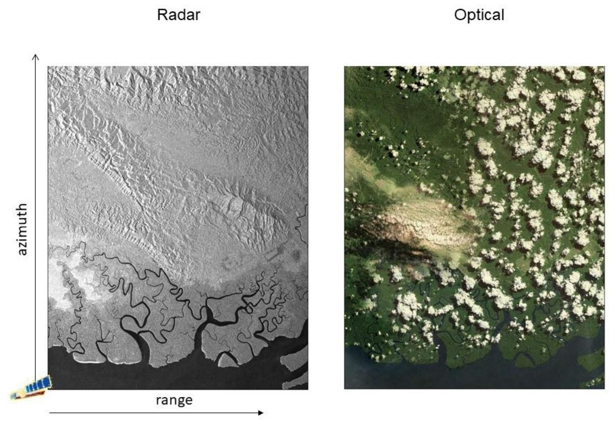
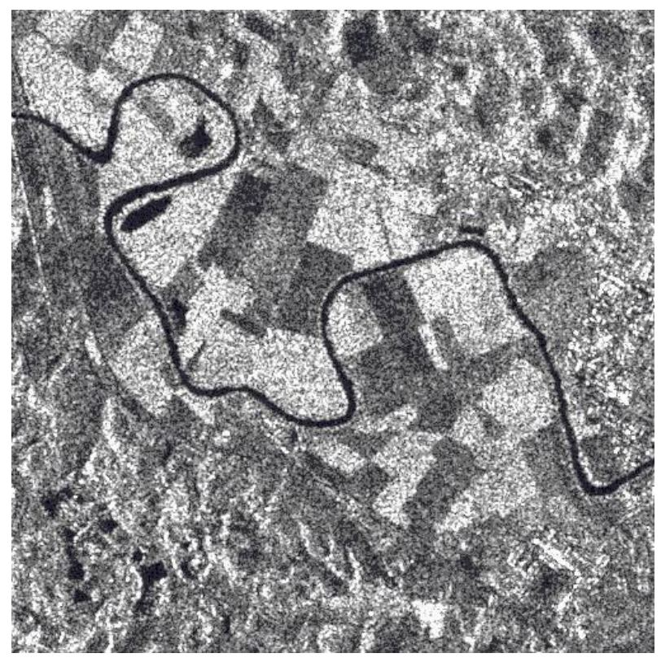

European Ground Motion Service (EGMS) - Algorithm Theoretical Basis Document
Copernicus Land Monitoring Service
SAR interferometry, Persistent Scatterer Interferometry (PSI), Small Baseline Subset (SBAS), Atmospheric Phase Screen (APS), GNSS calibration, Multi-interferogram techniques, Distributed scatterers (DS), Enhanced Spectral Diversity (ESD), European Terrestrial Reference System 1989 (ETRS89), Terrain Observation with Progressive Scan (TOPS)
Contact:
European Environment Agency (EEA)
Kongens Nytorv 6
1050 Copenhagen K
Denmark
https://land.copernicus.eu/
1 Introduction
1.1 Scope of the Document
This document describes the theoretical and practical bases for EGMS production. The document recalls the main aspects from basic SAR interferometric theory to the specifics of EGMS product generation. These include the Basic (L2a), Calibrated (L2b) and Ortho (L3) InSAR products, plus the model for the positioning satellite framework used for the calibration of the latter two.
This section continues with a list of associated EGMS references that may be of use to the reader, followed by a glossary of terms that are used throughout the document. Section three describes the basics of SAR interferometry and section four the features of a generic multi-interferogram processing chain. Section five discusses the differences between a generic processor and the four processing chains used for EGMS production. Sectionssix, seven and eight describe production of the three EGMS products, followed by a final section covering product updates.
It should be noted that, despite the contribution of four independent InSAR processing chains for generating the deliverables, EGMS results are characterized by a very high level of consistency and homogeneity. In fact, before starting any production activity, all processing chains have been carefully tuned to meet all project requirements and provide similar products, independently of the actual processing algorithms adopted by the different operators. The availability of different processing chains has allowed the providers, during the Operational Readiness Review phase, to run internal cross-check procedures which have improved the final quality of the measurements.
1.3 Glossary of terms (in alphabetical order)
Table 2 List of acronyms
| Acronym | Meaning |
|---|---|
| AOI | Area Of Interest |
| APS | Atmospheric Phase Screen |
| CLC | CORINE Land Cover |
| CORINE | Coordination of Information on the Environment |
| CPU | Central Processing Unit |
| CRS | Coordinate Reference System |
| DEM | Digital Elevation Model |
| DInSAR | Differential Interferometric Synthetic Aperture Radar |
| DS | Distributed Scatterer |
| ECMWF | European Centre for Medium-Range Weather Forecasts |
| EEA | European Environment Agency |
| EGMS | European Ground Motion System |
| EPN | EUREF Permanent Network |
| EPND | EUREF Permanent Network Densification |
| ERA5 | Fifth Generation ECMWF Atmospheric Reanalysis |
| ESD | Enhanced Spectral Diversity |
| ETRF2000 | European Terrestrial Reference Frame 2000 |
| ETRS89 | European Terrestrial Reference System 1989 |
| EUDV | European Dense Velocities |
| EUREF | Reference Frame Sub-Commission for Europe |
| GNSS | Global Navigation Satellite System |
| GRD | Ground Range Detected |
| HH, VV, HV, VH | Horizontal-Horizontal, Vertical-Vertical, Horizontal-Vertical, Vertical-Horizontal |
| InSAR | Interferometric Synthetic Aperture Radar |
| IPE | InSAR Processing Entity |
| IRF | Impulse Response Function |
| IW | Interferometric Wide Swath |
| LAEA | Lambert Azimuthal Equal Area projection |
| LOS | Line Of Sight |
| MODIS | Moderate Resolution Imaging Spectrometer |
| MP | Measurement Point |
| NGL | Nevada Geodetic Laboratory |
| NWM | Numerical Weather Model |
| PDGS | Payload Data Ground Segment |
| POD | Precise Orbit Determination |
| PRF | Pulse Repetition Frequency |
| PS | Persistent Scatterer |
| PSC | Persistent Scatterer Candidate |
| PSI | Persistent Scatterer Interferometry |
| RADAR | Radio Detection And Ranging |
| RMSE | Root Mean Square Error |
| SAR | Synthetic Aperture Radar |
| SBAS | Small BAseline Subset |
| SCE | Snow Cover Extent |
| SCR | Signal to Clutter Ratio |
| SLC | Single Look Complex |
| SNR | Signal to Noise Ratio |
| TOPS | Terrain Observation with Progressive Scan |
| USGS | United States Geological Survey |
| WAP | Wide Area Processing |
| WGS84 | World Geodetic System 1984 |
Table 3 Glossary of terms
| Term | Explanation |
|---|---|
| Amplitude | Measure of the strength of a radar signal (units of voltage), related to the amount of electromagnetic energy backscattered towards the radar by a target. In a coherent SAR system, the radar return is a complex signal, including – for each image pixel -both magnitude (amplitude) and phase. |
| Ascending (& descending) geometry | Terms relating to the direction of the near-polar orbiting satellite travel during a particular image acquisition. Two distinct geometries of SAR data are acquired when the satellite is flying from north to south as opposed to south to north. These two geometries of InSAR measurements are available in the EGMS Basic (L2a) and Calibrated (L2b) products as two discrete datasets. In the EGMS Ortho (L3) product, they are combined to constrain measurements to either purely vertical or east-west ground displacements (again, in two discrete datasets). |
| Azimuth (angle of satellite flight) | The flight direction of the satellite. Normally orthogonal to the SAR instrument’s look direction (range direction). |
| Azimuth resolution | Azimuth resolution describes the ability of an imaging radar to separate two closely spaced scatterers in the direction parallel to the motion of the sensor. It is inversely proportional to antenna length, and so a long (e.g. 1 km) antenna is synthesised by imaging the same points on the ground multiple times as the satellite proceeds along its orbital path – hence synthetic aperture radar. |
| Burst | To allow for large swaths imaged by the radar sensor while orbiting the Earth, Sentinel-1 Interferometric Wide swath (IW) Single Look Complex (SLC) products are made up of three sub-swaths that are in turn made up of separate ‘bursts’ by cyclically switching the antenna beam between multiple adjacent sub-swaths. |
| Coherence | Coherence is a measure of the correlation between corresponding pixels in an interferometric pair; ranging from 0, where there is no useful information, to 1,where there is no noise in the interferogram (the two images are locally identical, but a constant phase shift). In InSAR, coherence serves as a measure of quality, and is adversely affected by e.g., excessive variations in the acquisition geometry or changing/moving elementary scattering centres within each resolution cell. |
| (Coordinate) Reference System | A coordinate-based system used to locate geographical entities and involving a specific map projection in relation to a specific Earth ellipsoid. In EGMS, in agreement with previous EEA studies, the coordinate reference system (CRS) is ETRS89-LAEA Europe, also known in the EPSG Geodetic Parameter Dataset under the identifier: EPSG:3035. The Geodetic Datum is the European Terrestrial Reference System 1989 (EPSG:6258). The Lambert Azimuthal Equal Area (LAEA) projection is centred at 10°E, 52°N. Coordinates are based on a false Easting of 4321000 meters, and a false Northing of 3210000 meters. the WGS84 reference is used that is based on the European Terrestrial Reference System 89 (ETRS89), and its version the European Terrestrial Reference Frame 2000 (ETRF2000). |
| Differential interferogram | The result of compensating a SAR interferogram for fringes induced by changes in the acquisition geometry yet leaving any net phase due to target motion or propagation effects. |
| Displacement resolution | The minimum amount of displacement (in millimetres) that can be reliably measured by the system between two SAR acquisitions. |
| Distributed scatterer | Objects that individually do not show strong amplitude, nor high phase coherenceyet, when combined, their spatial and electromagnetic homogeneity allows spatial averaging to increase their SNR. It is a situation which can be found in areas where the backscattered signal from a single SAR resolution cell consists of a larger number of small scatterers, without the presence of a single dominant scatterer (e.g., land cover classes without significant vegetation, rocky areas, desert areas not covered with sand). |
| Epoch | The time of the acquisition of each radar image used in a multi-temporal InSAR analysis. The initial EGMS release covers epochs from 2015 up to Dec 2020. The first image used in the analysis can vary depending on the specific area of interest. |
| (SAR) Focusing | Data processing step that improves the resolution of the radar image by properlycombining all radar returns scattered from a specific target on ground. |
| Frequency | The number of oscillations per unit time. Sentinel-1 operates with a central frequency of 5.405 GHz (corresponding to a wavelength of ~5.55 cm). |
| Interferometry | A technique using the phase components of two SAR images acquired over the same area of interest from the same acquisition geometry to highlight changes in the phase contributions of each image pixel. |
| Geocoding | Geographic correction of image data to conform to a map projection. The process of resampling the data to conform to a standard map projection with known co-ordinates. |
| Geo-locational / positional accuracy | The “absolute” positional accuracy of an InSAR measurement point. The radar response from the many scattering features within each Sentinel-1 20 m x 5 m ground-cell is integrated into a single response, which is then mapped to the centre of each pixel. Specific algorithms allow one to achieve sub-pixel resolution in the case of strong dominant scatterers. |
| Global Navigation Satellite System (GNSS) | A system of (systems of) orbiting satellites that enable absolute (i.e., relative to anEarth-centred reference system) 3D positioning. |
| Line of sight | The direction in which the radar antenna is pointing when transmitting a radar pulse and receiving the return echo. |
| Line-of-Sight (LoS) / SAR incidence angle | Orbiting SARs are side-looking instruments to enable range measurement. This off-nadir angle is defined as the angle between the vertical and the radar beam at the radar platform. Due to the Earth curvature, the look-angle is not the same as the incidence angle, defined as the angle between the vertical and the radar beam propagation-vector at the Earth’s surface. InSAR displacement measurements are projected in the satellite’s ‘line-of-sight’, an important factor when considering displacements of unknown direction. |
| (InSAR) Measurement point | A measurement point (MP), in InSAR analyses, is any radar target providing a sufficient level of phase coherence to allow for phase measurements. EGMS InSAR measurement points can emanate from the radar scattering of either a single, high amplitude, dominant scattering centre (a Persistent Scatterer), or from several, contiguous, amalgamated cells (Distributed Scatterer) sharing similar radar returns. |
| Multi-interferogram(techniques) | The combination of many interferograms to overcome some of the basic limitations of conventional interferometric techniques based on just two images, e.g.,atmospheric noise, phase unwrapping ambiguities, fast displacements. Multi-interferogram techniques include PSI, SBAS and SqueeSAR®, further explained in the main text. |
| Multi-look imagery | SAR image where each pixel is obtained by summing the contribution of several pixels of the original, Single-Look Complex (SLC), SAR image. The averaging can involve different SAR images acquired over the same area or it can be the result of a moving average carried out over the image under analysis. In both cases the inherent level of speckle is reduced. |
| Normal baseline | In a plane perpendicular to the velocity of the satellite while performing the primary (primary) acquisition and passing through the radar target on ground, it is the (shortest) distance separating the secondary sensor location from the lineconnecting the primary sensor and the target. |
| Phase | Phase refers to the positional relationship of the peaks and troughs of a sinusoidal (monochromatic) signal. Phase can be measured in radians or degrees. For SAR data, phase values are related to the sensor-to-target distance. |
| Phase unwrapping | In SAR interferometry, it is the process of ‘unravelling’ the correct number of 360-degree phase cycles to arrive at a precise estimation of the real displacement of the target (in the line of sight). |
| Point scatterer | Objects that behave as pointwise radar targets. Typically, point scatterers exhibit astrong phase stability, persisting throughout nearly all images in a multi-temporal dataset (e.g., urban areas, anthropic activities). |
| Pulse | A short burst of electromagnetic radiation transmitted by the radar. Also described as a group of waves with a distribution confined to a short interval of time. The resolution that may be achieved by a radar sensor in range direction is determined by the bandwidth of the original pulse, rather than its duration, thanks to compression techniques. |
| Pulse repetition frequency | Rate of recurrence of the pulses transmitted by a radar, directly affects the resolution in azimuth direction. |
| Orbit state vectors | Orbit state vectors are used to describe a satellite’s location in its orbit, in space. They are made up of Cartesian vectors of position and velocity which uniquely determine the position and the trajectory of the spacecraft at a specific moment. |
| Range | Range is the line-of-sight distance between the radar and each illuminated scatterer (target). In SAR usage, the term is applied to the dimension of an image perpendicular to the line of flight of the radar (azimuth). |
| Range resolution | Resolution characteristic of the range dimension (orthogonal to azimuth), usually applied to the image domain, either in the slant range plane or in the ground range plane. Range resolution is fundamentally determined by the system bandwidth. |
| Reference frame | A coordinate-based system used to locate geographical entities and involving a specific Earth model. In EGMS, the coordinate reference system is ETRS89-LAEA Europe. |
| Revisiting time | The interval of time in which it is capable to acquire an image of the same area with the same geometric configuration (and hence the same electromagnetic properties). The revisiting time is dependent by the orbits followed by the SAR system, and it may vary from a few days to a few weeks. |
| Signal noise | Any unwanted or contaminating signal competing with the desired signal (e.g., thermal noise, quantization noise, etc.). The relative amount of additive noise is described by the signal-to-noise ratio (SNR), equal to the ratio of the power of signal and the power of the noise. |
| Single Look Complex | Single Look Complex (SLC) image data are low-level SAR data where both amplitude and phase are preserved. SLC format SAR data are the basic input for InSAR processing. Contrary to multi-look SAR images, no spatial or temporal averaging or smoothing is performed, and data are provided at the highest resolution compatible with the radar system at hand. |
| Spatial resolution | The minimum-size feature that can be discerned by the system. In practice, this is determined by the radar bandwidth in range and the antenna pattern in azimuth. For Sentinel-1 IW swath images, the resolution is ~20 m in azimuth by ~5 m in ground-range, while pixel spacing is ~14 m in azimuth by ~3.5 m in ground range. |
| Speckle | A granular interference that inherently exists in any coherent sensor, originatingfrom the coherent sum of the radar returns associated with the elementary scattering centres within a resolution cell. |
| Synthetic Aperture Radar (SAR) | A ‘Synthetic Aperture Radar’ is a coherent system that uses the motion of the sensor, in our case an orbiting satellite, to synthesize a large antenna, and thus improve spatial resolution in the flight direction (azimuth) to a useful degree. A SAR system emits pulses of microwave energy and records both the amplitude and phase of the echoed signal, hence recovering information about the target reflectivity and changes in its distance from the sensor (to within integer multiples of the system wavelength). |
| Swath | The width of an imaged scene in the range dimension, measured in either ground range or slant range. |
| Temporal baseline | The time in days separating the two SAR acquisitions used to make an interferogram. |
| Temporal distribution (of SAR data acquisitions) | The total number, and distribution over time, of the SAR acquisitions processed to produce the InSAR result under analysis. A regular and dense distribution of acquisitions is preferred for higher quality results. Note that Sentinel-1 data are nominally acquired every six days over Europe. |
| Temporal resolution / acquisition-rate / sampling | Temporal resolution relates to the rate at which the Sentinel-1 mission, with two satellites flying 180 degrees apart, re-acquires imagery over the same place. Each satellite acquires repeat data every 12 days, and so together, acquisitions over the same place are made every 6 days. |
| Time series data | A time series is a series of data points indexed in time order. An InSAR time seriesrelates to a single measurement point and shows the displacement of that point over time according to each SAR image, and with respect to a spatio-temporal reference (InSAR data are relative). The reference in space can be represented by a selected measurement point in the dataset, or by a virtual reference point, whose time series is obtained performing specific statistical analysis on the data. The average velocity of each measurement point can be easily derived from the time series of measurements for each point. Time series data are useful in revealing deviations from the average velocity, e.g., accelerations, and assist in understanding motion trends and evolution. |
2 Radar remote sensing
The use of online maps based on satellite data has revolutionized how we access, visualize and search for geographic information. These data are commonly acquired by optical sensors, i.e., cameras acquiring images in the optical domain (visible wavelengths range from approximately 0.3 to about 0.7 micrometres) or in neighbouring bands, such as infrared and ultraviolet.
A radar (Radio Detection and Ranging) system operates in the microwave domain where the wavelengths are of a few centimetres, 100,000 times longer than those of the visible spectrum. Different radar sensors operate at different frequencies where, the longer the wavelength, the more effective the ability to penetrate compatible materials. Therefore, unlike an optical sensor, a radar can ‘see’ through clouds, fog, and dust, making it a unique tool for a number of remote sensing applications (Figure 1).
A radar is what is known as an active system and uses pulses of microwave energy to measure the distance and character of objects by recording the time-delay and strength of returning, echoed signals. A radar provides its own illumination and so can be used independently of sun illumination. In monostatic systems, such as Sentinel-1, the same radar antenna acts as both the transmitter and the receiver, switching from one mode to another thousands of times a second.
Modern satellite radars are coherent systems; that is, the sensor records not only the amplitude of returning echoes, but also their phase, which is related to the sensor-to-target distance. It is the measurement of possible variations of the phase values in a series of radar images acquired over the same area on ground at different times, that is fundamental to SAR interferometry and the European Ground Motion Service (EGMS).
Figure 1 shows a comparison between a SAR and an optical image acquired over the same area. The optical image is derived from a ‘passive’ system that records reflected solar radiation in discrete wavebands. These data are passed through the RGB colour-guns of a monitor to displace colour images. The SAR image is derived from an ‘active’ system that emits its own targeted radiation as a pulse and then records the amplitude and delay of the backscattered signal, pixel by pixel. The resulting SAR image is simply grey scale with pixel digital numbers dominated by surface roughness(with contributions from orientation and material conductivity). The sea appears dark as its calm surface mirrors the radar signal away from the satellite. Rocky outcrops, and buildings can appear bright as large proportions of the incident radar signal is reflected back to the sensor. Geometric distortions are present in areas of significant topography due to the ‘ranging’ characteristics of the active imaging system. Significantly, there are no clouds as these are penetrated by the radar signal, a distinct advantage for reliable and timely acquisitions.

A close examination of a radar image shows that, even for a single surface type, grey level variations may occur between adjacent resolution cells. These variations can create a grainy texture that is characteristic of radar images and is called ‘speckle’. Speckle occurs because each resolution cell associated with an extended target contains several scattering centres, and these sub-cell returns, by positive and negative interference, cause light or dark results. This creates the characteristic “salt and pepper” appearance. Speckle is a system phenomenon and is not the result of spatial variation of average reflectivity of the radar illuminated surface.

The effect of speckle is typically reduced by either filtering or multi-look processing. In both cases, speckle is reduced at the expense of spatial resolution.
2.1 Amplitude and phase
In general, a sensor is ‘coherent’ if it can generate an electromagnetic field exhibiting a fixed (non-random) phase relationship between the field values at different locations and times. If a laser beam could be ‘frozen’ in time, the values of the electric (and magnetic) field would appear regularly arranged in space, approximating a sinusoidal pattern. Although radar systems operate at different frequencies compared to laser devices, they can generate an illuminating beam that can be thought of as a pure sinusoidal wave with known amplitude and phase. Amplitude values are associated with the amount of electromagnetic energy backscattered towards the sensor by any object on ground, while phase values are related to the sensor-totarget distance.
The sensor-to-target distance can be expressed as an integer number of wavelengths, plus any fraction of a wavelength remaining, if the distance is not an exact multiple of the wavelength. The phase recorded by the radar signal is either zero (exact integer) or just this fraction of a cycle, ranging from 0 to 2π (phase values, are known modulo-2π). In fact, the two-way travel path of the radar pulse needs to be accounted for, and so the ‘effective wavelength’ of the system is \(\lambda/2\), since the ‘phase signature’ of a point-wise object does not change if its distance from the radar is changed by multiples of \(\lambda/2\).
2.2 Synthetic Aperture Radar
Satellite sensors are mounted on their platforms with the direction of transmission orthogonal to the flight direction. The inclination of the radar antenna with respect to the nadir (i.e., the direction pointing directly below the sensor) is referred to as the off-nadir, or look, angle (\(\theta\)). For most satellite SAR systems available today, the off-nadir angle can be selected among a set of values ranging from about 20 to 50 degrees. It should be noted that, due to the curvature of the Earth’s surface, the incidence angle of the radiation (\(\alpha\)) on flat horizontal terrain is actually larger than the off-nadir angle (Figure 3).

The direction along the sensor line-of-sight (LoS) is usually called the slant-range (or simply range) direction. The off-nadir angle is never zero, since the radar would receive the echoes from the imaged objects at nearly the same time, making it impossible to create an image.
The spatial resolution in azimuth (orthogonal to range) of a radar is directly proportional to the sensor wavelength (λ) and to the distance of the target (\(R_0\)), but inversely proportional to the size of the radar antenna (D).
\[ L \approx \frac{R_{0}\lambda}{D} \]

As an example, a C-band radar satellite (wavelength of about 5 cm) orbiting at 900 Km of height with a 10m antenna would have a 4500 m range resolution. Pretty much useless for any real application. Hence the concept of synthetic aperture. A Synthetic Aperture Radar is a side-looking, imaging radar system that uses the motion of the sensor, in our case an orbiting satellite, to synthesize a much larger aperture, and hence improve azimuth resolution to a useful degree. Basically, a series of acquisitions of the same target are registered from the onboard antenna while moving at the instants Δt, and then opportunely combined together to mimic the behaviour of a larger antenna. The amplitudes of the multiple acquisitions slowly vary while the phases of the signal can be adjusted according to geometric considerations, and the various contributions coherently summed. Following the approach, azimuth resolution in the order of a few metres can be easily reached (synthetizing an antenna of roughly thousands of metres), at the cost of additional processing efforts after the image’s acquisition.
Across-track (range) resolution is determined by the bandwidth of the system, i.e., the bandwidth and length of the radar pulse used to illuminate the ground.
Usually, the pulse repetition frequency ranges from a few hundred to a few thousand Hertz for airborne and spaceborne systems, respectively. The pulse transmitted by the SAR interacts with the Earth’s surface and only a portion of it is backscattered to the receiving antenna, which can be the same as the transmit antenna (for a monostatic radar) or a different one (for bi- or multi-static radar systems). The amplitude and the phase of the backscattered signal depend on the physical (i.e., geometry, roughness) and electrical (i.e., permittivity) properties of the imaged object, the characteristic of the radar sensor, as well as the propagation media. The width of the acquired swath from spaceborne SAR systems varies typically from 5 to 500 km. The spatial resolution of satellite SAR images depends on several parameters. The interested reader should refer to one of the many tutorials now available on SAR systems (see references).
Sentinel-1 images, used in EGMS, have a spatial resolution of about 20 m x 5 m in azimuth and ground-range. Figure 5 shows an example of an amplitude image acquired by the Sentinel-1 system. The image is in SAR coordinates (range and azimuth).

2.3 Revisiting times
Each spaceborne SAR system has a well-defined revisiting time, i.e. the interval between acquisitions of the same area with the same geometric acquisition configuration (and hence the same electromagnetic properties). The revisiting time is determined by the overall satellite mission design and objectives and may vary from a few days to a few weeks. Sentinel-1A revisits every 12 days, and with the identical Sentinel-1B in a diametrically opposed orbit, 180 degrees apart, the two acquisitions combined equal a possible 6-day revisiting time, as applied over Europe.
Coupled with revisiting times are the concepts of a) the relative position of the SAR instrument between acquisitions (baseline), b) the absolute position of the SAR sensor at time of acquisition (orbit state vectors), and c), the precision of the sensor trajectory through space (orbital tube). Further information on these topics is given in sections Section 3.2 and Section 7.1.2.
2.4 Polarisation
Imaging radar systems typically transmit a polarised radar pulse, i.e., the electric field associated with each radar pulse oscillates in a specific plane (usually vertical or horizontal with reference to the ground). This has clear implications for the signal-to-target interaction depending on the relative size and orientation of both. Depending on the structure of a target, different backscattering can occur when it is hit by signals of different orientation (a crop for example). SAR ‘polarimetry’ is therefore employed to learn more about a target and to aid with classification. The polarisation mode generally employed by the Sentinel-1 SAR instrument is vertical. The system can, however, record both vertical and horizontal polarised signals. In general, SAR data can be: HH (horizontal transmit, horizontal receive), VV, HV, or VH. Sentinel-1 data are VV and VH. It should be noted that in EGMS only single-polarisation, co-polarized, data (VV), acquired by Sentinel-1 sensors are used.

2.5 Geometrical distortion
A set of points evenly sampled in range direction, for an undulating topography, can correspond to an irregular set of points in ground range. The area associated to each pixel of a radar image is not constant and depends on the local slope. Terrain slopes facing the sensor are ‘compressed’ into a few samples, while a much higher data sampling is obtained along the opposite slope (assuming the area is not in shadow, i.e., has not been reached by a radar signal and so does not generate any radar return).
Since image pixels can correspond to terrain patches with different extents, the amplitude of the radar return can vary accordingly. Slopes facing the sensor are said to be affected by foreshortening and typically correspond to very bright pixels. This is because the resolution cell can be hundreds of meters in ground range, and more power can be backscattered towards the radar compared to flat terrain. On the contrary, slopes facing the opposite direction appear dark, local incidence angles are high, and spatial sampling is better than that over flat terrain as the resolution cell now shrinks to a few meters.
Another effect visible in mountainous areas or in urban areas where tall buildings are present is called layover. This occurs when the radar beam reaches the top of a mountain or a tall feature before it reaches the base - the return signal from the top is received by the sensor before the signal from the bottom. As a result, the top of the mountain is displaced towards the radar from its true position on the ground, and ‘lays over’ the base.
All these effects of geometric distortion are visible in Figure 7.

2.6 Ascending and descending orbits
All satellites equipped with SAR sensors circumnavigate the Earth in a near-polar orbit at an altitude ranging from 500 to 800 km above the Earth’s surface, depending on the satellite platform hosting the SAR sensor (Figure 8a). The angle between true north-south and the satellite’s orbit varies slightly, depending on the mission, but in general lies in the range of ten degrees. By combining the rotation of the Earth and the orbital paths of the satellites, the entire surface of the Earth is illuminated by two different satellite geometries. When the satellite travels in a descending orbit, meaning that it travels from north to south, it views a target area looking westward (in right-looking mode), while during its ascending orbit, that is, when it moves from south back to the north, it views the same target area looking eastward.
By acquiring data in both geometries over an area of interest that is characterised by rough topography, it is possible to achieve a more effective spatial sampling since areas affected by foreshortening or layover in one acquisition geometry will correspond (if not in shadow) to slopes well sampled by the other acquisition geometry.
The possibility of collecting data in two opposite acquisition geometries over any area of interest is a key feature that can be exploited successfully to recover two components of the displacement field affecting the area of interest from multiple InSAR observations (Figure 8b).

References:
Ferretti, A., Monti-Guarnieri A., Prati, C., Rocca, F., Massonnet, D. (2007a). InSAR Principles: Guidelines for SAR Interferometry Processing and Interpretation. ESA Publications, TM-19. ISBN 92-9092-233-8. Available at: http://www.esa.int/About_Us/ESA_Publications
Ferretti, A. (2014), Satellite InSAR Data, EAGE Publications, ISBN 9073834716.
Cumming I.G. and Wong, F.H. (2005). Digital Processing of Synthetic Aperture Radar Data: Algorithms and Implementation. Artech House Remote Sensing Library. ISBN 1-58053-058-3
Curlander, J.C., and McDonough, R.N. (1991). Synthetic Aperture Radar: Systems and Signal Processing Wiley Series in Remote Sensing and Image Processing. ISBN 0-471-85770-X
NASA Earth Data tutorial https://www.earthdata.nasa.gov/learn/earth-observation-data-basics/sar
Alaska SAR Facility tutorial https://www.earthdata.nasa.gov/learn/earth-observation-data-basics/sar#training
SAR Journal tutorial https://syntheticapertureradar.com/education/
3 SAR Interferometry
SAR Interferometry (InSAR) involves the use of two satellite SAR images acquired over the same area at different times and/or from slightly different acquisition geometries to make an interferogram, where the phase of each corresponding pixel is differenced to highlight any possible changes. Phase variations can be generated by changes in the acquisition geometry of the sensor, changes in the ‘radar signature’ of the object on ground, different atmospheric conditions at the time of acquisition (propagation effects), or changes in the sensor-to-target distance. Technically, a differential interferogram is a SAR interferogram compensated for possible phase changes due to different acquisition geometries. In general, differential InSAR analysis aims at measuring surface deformation phenomena by tracking changes in the sensor-to-target distance after removing possible effects due to any other factors. This technology is at the core of EGMS.
3.1 SAR phase components
InSAR technology is based on SAR signal phase. The signal-angle, or phase, at the sensor for each pixel of a SAR image is determined by two main contributions:
The delay between transmission and reception of the radar pulse.
The interaction between the incident electromagnetic waves and the scatterers within a ground resolution cell.
Due to the physical differences between resolution cells and the random distribution of the elementary scatterers corresponding to each pixel, each having a certain distance from the sensor, phase values, even from neighbouring pixels within a single SAR image, are unrelated, random, and of no practical use. It is only when corresponding pixels from two SAR images of the same place acquired at different times (and/or from slightly different angles) are compared that the phase values can provide useful information.
InSAR is therefore a technique that exploits the difference in backscattered phase between two different satellite images of the same place acquired at different times or from different angles, the result being an interferogram. In fact, whenever the ‘radar signature’ of the radar target does not change between two SAR acquisitions (i.e. the interaction between the radar signal and the object is almost identical), the resulting interferometric fringes can be exploited to measure possible variations in the optical path of the signal: InSAR can then be used either to recover the local topography of the area of interest (by changing the location of the radar antenna) or to measure possible variations in the positioning of the object in the satellite’s line of sight, i.e. movement.

3.2 Interferometric phase components
There are several factors that contribute to the phase, \(\Phi\), of a pixel P of a SAR image, namely:
\[ \Phi(P) = \psi + \frac{2\pi}{\lambda} 2r + \phi_a + n \]
where \(\psi\) is the phase component associated with the interaction between the radar signal and the elementary scatterers within the resolution cell (dependent on the material and the location of the scatterers), 2r is the 2-way travel path (i.e., r is the sensor-to-target distance measured along the satellite line of sight), \(\lambda\) is the system wavelength, \(\phi_a\) is the phase component induced by propagation effects and n is the noise.
Whenever an interferogram is generated, by computing the difference of the phase values of homologous pixels belonging to two satellite SAR images acquired at different times over the same area of interest, the interferometric phase \(\varphi_i\), i.e., the phase of each pixel of the interferogram, is then the sum of the following (main) components:
\[ \varphi_i = \varphi_d + \varphi_a + \varphi_t + \nu \]
\(\varphi_d\) − Displacement component: Due to any difference in the position of the target between the two SAR images, measured in the line of sight of the satellite. The displacement component is normally the part of interest that algorithms aim to identify. This is the case for EGMS.
\(\varphi_a\) − Atmospheric component: Due to atmospheric perturbation of the electromagnetic waves emitted by the SAR system. In fact, the speed of propagation of the radar signal, directly impacting on the phase values of the detected image, depends on many factors, such as: the amount of tropospheric moisture, temperature and pressure of the different atmospheric layers, the total electron content in the ionosphere, etc. The atmospheric component is normally considered a disturbance and its reliable determination is one of the main challenges in InSAR data processing.
\(\varphi_t\) − Topographic component: Induced by different acquisition geometries at the time of the acquisition. This phase component can be strongly reduced by taking advantage of prior information about the local topography (e.g., using a Digital Elevation Model – DEM - of the area of interest) and accurate satellite orbit state vectors describing the acquisition geometries. In multi-interferogram analyses (such as those used in EGMS), requirements on the accuracy of the DEM used in the processing are not strict (accuracy of 10m are fine), since errors can be estimated and compensated for from the analysis of many interferograms acquired over the same area.
\(\nu\) - Noise: This term is the sum of two contributions: one due to variations in acquisition geometry that will affect the whole image (geometric decorrelation), and the other due to any temporal decorrelation of features within the image, such as changing vegetation, ploughed fields, demolition/construction of buildings(temporal decorrelation). As these types of noise become more pronounced, InSAR analysis become more challenging.
An example of a SAR interferogram is shown in Figure 10. The displacement field (corresponding to the component \(\varphi_t\) in eq. 2) generated by the Mw 6.3 L’Aquila earthquake (6th April 2009) is clearly visible in the interferogram. The acquisition geometries of the two SAR images used to generate the interferogram were similar, strongly limiting the topographic contribution (\(\varphi_t\)). However, large areas are affected by phase noise (decorrelation) and almost no useful information can be extracted from these areas. Moreover, even in areas where noise contributions are low, atmospheric disturbances create low frequency phase components \(\varphi_a\) that hinder the analysis of the co-seismic displacement field.
Usually, not all pixels in a SAR interferogram contain useful information. In fact, even if the phase of all pixels is composed of the components shown in the eq. 1, whenever the noise component is significant and overwhelming, no useful estimation can be obtained. Pixels or patches of pixels which contain useful information are known as coherent, and the indicator normally used to identify these points and zones is called interferometric coherence. Additional details about the interferometric coherence will be given in section Section 4.4.

All interferograms can be categorised using two main parameters: the temporal baseline (\(B_t\)), and the normal baseline (\(B_n\)), more precisely:
\(B_t\) is the time that separates the acquisition of the two images used to generate an interferogram. Intuitively, the shorter the period of separation, the higher the signal-to-noise ratio of the interferogram, and the better the phase coherence (i.e., \(\Delta\psi\sim0\)). In areas only slightly affected by temporal decorrelation (e.g., rock deserts, urban environments), even long periods of separation (high values of temporal baseline) do not necessarily affect signal quality. Those are the kind of radar targets most suitable for multi-temporal InSAR analysis.
\(B_n\) is the difference in position of the sensor between the two acquisitions, directly proportional to the change in incidence angle of the radar beam. The larger the normal baseline, the more sensitive the system to local topography, although the quality of the interferometric phase decreases. There is in fact a practical limit to the normal baseline, called critical baseline, where the differing view angles become so large that the phase signal becomes decorrelated and no useful information can be extracted. The critical baseline depends on the acquisition geometry and the bandwidth of the radar and, in the case of Sentinel-1, is around 8,000 m, much larger than the ‘orbital tube’ defined for the Sentinel-1 mission, which is less than 100 m (i.e., given any two acquisitions over a certain area the probability that the distance between the two orbital paths is more than 100 m is extremely low).
Every interferometric fringe in the interferogram corresponds to displacement along the satellite line-of-sight of λ/2 (due to the two-way travel path). Provided the displacement field is spatially correlated, the fringe pattern would resemble a set of contour lines and the actual deformation would then be computed after a phase unwrapping procedure, adding the proper number of phase cycles to each pixel of the image, starting from a reference point P0. In fact, InSAR measurements are never absolute: without prior information, data always refer to a point selected within the SAR image, supposed motionless or with known elevation/motion.
Almost all phase unwrapping algorithms assume that the true unwrapped phase field is ‘smooth’ and varies ‘slowly’ in space. More precisely, neighbouring phase values are supposed to be within one-half cycle (πradians) of one another. Similar hypotheses are used to unwrap along the time direction whenever displacement data are estimated from a long temporal series of SAR images acquired over the same area of interest at different times. Phase unwrapping is one of the most difficult steps in InSAR data processing for which only sub-optimal solutions can often be identified, especially when using only two SAR images (i.e. one interferogram). Ground movements that cause unwrapping difficulties include abrupt, discontinuous, or rapid displacements.
Apart from the processing difficulties presented by phase ambiguity, the need for phase unwrapping implies that all InSAR measurements are relative to a reference point and are not ‘absolute’. That is the reason why EGMS uses GNSS data to calibrate all InSAR data, making it (almost) independent of the selection of the reference point used in the processing.
References:
Bamler, R. and Hartl P. (1998). Synthetic Aperture Radar Interferometry. Inverse Problems, 14, R1-R54.
Dzurisin, D. (2006). Volcano Deformation. Springer. ISBN 3-540- 42642-6
Ferretti, A., Monti-Guarnieri A., Prati, C., Rocca, F., Massonnet, D. (2007a). InSAR Principles: Guidelines for SAR Interferometry Processing and Interpretation. ESA Publications, TM-19. ISBN 92-9092-233-8. Available at: http://www.esa.int/About_Us/ESA_Publications
Ferretti, A. (2014), Satellite InSAR Data, EAGE Publications, ISBN 9073834716.
Hanssen, R.F. (2001). Radar Interferometry: Data Interpretation and Error Analysis. Kluwer Academic Publishers. ISBN 0-7923-6945-9
Rosen, P., Hensley S., Joughin I., Li F., Madsen S.N., Rodriguez E., Goldstein R. (2000). Synthetic Aperture Radar Interferometry. Proceedings of the IEEE, 88(3), 333-382
3.3 Multi-interferogram techniques
As discussed in the previous sections, the interferometric technique involves a phase comparison of SAR images, gathered at different times with slightly different looking angles. The technology has the potential to detect millimetre range variations, although, apart from cycle ambiguity problems, practical limitations are found in temporal and geometrical decorrelation and atmospheric artefacts.
Atmospheric components show a strong spatial correlation within every single SAR acquisition, but they are uncorrelated in time. Conversely, target motion is usually strongly correlated in time and can exhibit different degrees of spatial correlation depending on the phenomenon at hand.
To improve the accuracy of InSAR measurements, compared to conventional analyses and to filter-out atmospheric effects, it is useful to work on a set of SAR acquisitions, rather than just two images, thus adopting a multi-interferogram approach. If the number of phase contributions to be dealt with is to be limited, the analysis should focus on coherent scatterers only (Figure 11), i.e., radar targets only slightly affected by temporal and geometrical decorrelation and that exhibit stable reflectivity values, known as either Permanent or Persistent Scatterers (PS). In Persistent Scatterer Interferometry (PSI), preserving the information associated with point-wise coherent scatterers (the PS) that might be surrounded by noisy pixels, means no spatial filtering is performed on the interferograms.
To keep the mathematical framework simple, all interferograms are generated using a single primary image and displacement values are estimated selecting a single reference point, common to all interferograms.
The concepts expressed in the previous paragraphs are the basic ingredients of any PSI technique, where the final goal is the estimation of the elevation and possible displacement for each PS identified within an area of interest, jointly exploiting all SAR scenes of the interferometric data-stack.

There are several multi-interferogram processing techniques that differ mainly in the rules used to choose the image-pairs processed that make the individual interferograms which are then processed collectively. Any two SAR images of the same place can be processed to obtain an interferogram, but only those conforming to specific parameters will yield useful data.
The SAR images that make up an interferometric pair can be defined in terms of their temporal and normal baselines that, for some techniques, must both fulfil certain thresholds and limits.
As mentioned, the various multi-interferogram techniques differ mainly in the set of rules used to establish which image pairs shall be interferometrically processed. Many tutorials are available. The interested readers should refer to the bibliographic references at the end of this section.
Three established methods are outlined below:
Persistent Scatterer Interferometry (PSI): In a set of N SAR images, one is selected as a reference, normally in the temporal centre of the dataset to minimize the dispersion of the temporal baseline values. N-1 interferometric pairs are established between the reference image and the remaining N-1, resulting in the generation of N-1 interferograms. All the interferograms are used in the processing (except those showing strong decorrelation effects over large portions of the image due, for instance, to snow coverage).
Advanced Methods based on both PS and DS: In a set of N images all possible interferograms are generated, by computing the coherence matrix of each image pixel. An optimum set of N phase values is then extracted from each matrix. After the estimation of the optimum phase values, the processing follows the steps used by most PSI algorithms. An example of these algorithms is SqueeSAR® (Ferretti et al., 2011).
Small Baseline Subset (SBAS): Thresholds for the normal and temporal baselines are established and then all image-pairs according to these thresholds are processed. Consequently, there is no single primary scene. The SBAS approach reduces issues caused by temporal decorrelation because of the shorter spatial and temporal thresholds imposed. However, as not all interferometric pairs are used in the processing, results can suffer more from fading signals affecting DS, at least whenever the number of interferograms is kept to a minimum (Ansari et al., 2021).
Another differentiator between different multi-interferogram techniques is their focus on different families of radar targets, which will be the subject of the next section.
References:
Ferretti, A., Prati, C. and Rocca, F., 2001. Permanent scatterers in SAR interferometry. IEEE Transactions on geoscience and remote sensing, 39(1), pp.8-20.
Ferretti, A., Fumagalli, A., Novali, F., Prati, C., Rocca, F. and Rucci, A., 2011. A new algorithm for processing interferometric data-stacks: SqueeSAR. IEEE transactions on geoscience and remote sensing, 49(9), pp.3460-3470.
Kampes, B.M. (2006). Radar Interferometry – Persistent Scatterer Technique. Springer. ISBN-10 1-4020-4576-X (HB).
Costantini, M., Falco, S., Malvarosa, F., Minati, F. and Trillo F. (2009). Method of persistent scatterer pairs (PSP). and high-resolution SAR interferometry. Proc. IEEE International Geoscience and Remote Sensing Symposium, Cape Town, South Africa, III, 904-907.
Adam, N., Kampes, B. and Eineder, M. (2004). Development of a scientific permanent scatterer system: modifications for mixed ERS/ENVISAT time series. Proceedings of the 2004 Envisat & ERS Symposium, Salzburg, Austria 6-10 September 2004 (ESA SP-572).
Raucoules D., Bourgine B., de Michele M., Le Cozanet G., Closset L., Bremmer C., Veldkamp, H., Tragheim D., Bateson L., Crosetto M., Agudo M., 2007, Persistent Scatterers Interferometry Independent Validation and Intercomparison of Results – Final Report, BRGM/RP-55649-FR. Available at: http://earth.esa.int/psic4/PSIC4_D9_final_report.pdf
Werner, C., Wegmuller, U., Strozzi, T. and Wiesmann, A. (2003). Interferometric point target analysis for deformation mapping. Proc. IEEE International Geoscience and Remote Sensing Symposium, Toulouse, FranceBerardino, G. Fornaro, R. Lanari, and E. Sansosti, “A new algorithm for surface deformation monitoring based on small baseline differential interferograms,” IEEE Transactions on Geoscience and Remote Sensing, Vol. 40, No. 11, pp. 2375–2383, 2002.
H. Ansari, F. De Zan and A. Parizzi, “Study of Systematic Bias in Measuring Surface Deformation with SAR Interferometry,” in IEEE Transactions on Geoscience and Remote Sensing, vol. 59, no. 2, pp. 1285-1301, Feb. 2021, doi: 10.1109/TGRS.2020.3003421
Crosetto, M., Monserrat, O., Cuevas-González, M., Devanthéry, N. and Crippa, B., 2016. Persistent scatterer interferometry: A review. ISPRS Journal of Photogrammetry and Remote Sensing, 115, pp.78-89.
3.4 Pointwise and Distributed Scatterers
There are two main families of persistent scatterer that can be identified in a SAR image; ‘Pointwise’ and ‘Distributed’ (Figure 12). Both are part of EGMS products.
Pointwise scatterers (PS): These are ground features creating a dominant scattering centre within the resolution cell they belong to, strongly limiting any phase decorrelation effects due to different acquisition geometries. In fact, whenever there is a strong, dominant, scatterer within a resolution cell the interference effects between different scatterers almost disappear. Point scatterers are usually characterised by high reflectivity values and stable phase values. Objects that make good radar targets are varied and can be natural or man-made. Among the natural forms are rock outcrops, hard unvegetated earth surfaces, boulders, etc. Among the artificial objects are buildings, streetlights, transmission towers, bridge parapets, above-ground pipelines, features on dams and roof structures, and any rectilinear structure that can create a dihedral that reflects the radar signal back to the satellite (Perissin and Ferretti, 2007). PS density depends heavily on terrain cover: vegetated areas exhibit a low density of radar targets suitable for InSAR measurements, while urban areas are favourable for PS analyses. No measurement points are identified over water and in general where radar reflectivity changes with time.
Distributed scatterers (DS): These are ground features that individually do not show strong amplitude, nor a very stable phase, yet, when combined via averaging, their spatial and electromagnetic homogeneity allows specific algorithms to amplify their radar response. Although many PS can be identified in urban areas, DS are much more common in natural environments and, even although often affected by geometrical decorrelation, can exhibit good coherence levels even in interferograms with temporal baselines of many years, provided that normal baselines values are kept low. To enhance signal-to-noise ratios (SNR), interferograms should be filtered spatially, and only pixels exhibiting good coherence in many interferograms should be considered for analysis.

Multi-interferogram techniques based on the SBAS approach focus on DS, while PSI algorithms aim to detect and exploit (mostly) PS. Lately, a growing number of InSAR processing algorithms (such as SqueeSAR®) try to extract information from both families of radar targets.
The utilisation of both pointwise and distributed scatterers allows multi-interferogram techniques to effectively retrieve data over varying landcover types (Figure 12). The most advanced techniques process the two families of scatterers jointly, in a single process.
While point scatterers are relatively simple to handle, distributed scatterers, by nature of their spatially distributed nature, must be consciously managed. In fact, any spatial averaging should be carried out only on pixels exhibiting similar reflectivity values (and possibly affected by the same displacement), which should be identified using specific statistical approaches. Moreover, as pointed out in recent publications (Ansari et al., 2021), DS can be affected by “fading signals” that can bias the estimation of ground motion.
References:
Perissin D. and Ferretti A. (2007). Urban-Target Recognition by Means of Repeated Spaceborne SAR Images. IEEE Transactions on Geoscience and Remote Sensing, 45(12), pp. 4043-4058.
H. Ansari, F. De Zan and A. Parizzi (2021), “Study of Systematic Bias in Measuring Surface Deformation with SAR Interferometry,” in IEEE Transactions on Geoscience and Remote Sensing, vol. 59, no. 2, pp. 1285-1301, Feb. 2021, doi: 10.1109/TGRS.2020.3003421.
Hooper, A. (2008). A multi-temporal InSAR method incorporating both persistent scatterer and small baseline approaches. Geophysical Research Letters, 35, p. L16 302. doi:10.1029/2008GL03465
Ferretti, A., Fumagalli, A., Novali, F., Prati, C., Rocca, F. and Rucci, A., 2011. A new algorithm for processing interferometric data-stacks: SqueeSAR. IEEE transactions on geoscience and remote sensing, 49(9), pp.3460-3470.
4 A Generic Multi-Interferogram InSAR Processor
EGMS products are being made by a consortium comprising four different InSAR Processing Entities (IPE). Consequently, there are differences in the processing algorithms implemented in the different processing chains, although the end products have the same attributes, and all meet the project’s requirementsin terms of quality, consistency and homogeneity. This section describes the main components that are common to all, i.e., the processing steps of a generic multi-interferogram InSAR processor for wide area processing.
InSAR techniques based on Persistent Scatterer Interferometry (PSI), at the core of the EGMS service, are based on a 2-step processing strategy: first all interferograms are unwrapped on a sparse grid of PS Candidates (PSC), then, after estimation and removal of the atmospheric components, all points providing useful information are identified and the final results are generated (Figure 13). Due to the high spatial correlation of atmospheric phase components, even a sparse grid of measurements may allow proper sampling of the atmospheric effects: their phase components can be estimated on a sparse grid of coherent scatterers and then interpolated all over the image, obtaining an estimation of the atmospheric phase screen on each interferogram. After estimation and removal of the atmospheric effects (or, at least, after a strong reduction of their impact on the data), it is possible to operate a pixel-by-pixel analysis that can further improve the results by increasing the spatial density of measurement points (MP). Both elevation and displacement data can be estimated for all MP by jointly using all SAR images, compensated for atmospheric disturbances.

In the following sections, we will describe the most important processing steps, namely:
Reference image selection, coregistration and interferogram generation
Selection of “MP candidates”
Multi-interferogram phase unwrapping
Estimation of the atmospheric phase screen
Identification of all MP and generation of the results
4.1 Reference image selection
Given N SAR images of the area of interest characterized by the same acquisition geometry, data are first coregistered on a unique primary, carefully selected in order to minimize the dispersion of temporal and geometrical baseline values (Figure 14) and maximize the average coherence, i.e., the expected SNR of all interferograms:
\[ \max_i \left\{ \sum_{j=1}^{N} \left( 1 - \frac{\lvert B_n^{ij} \rvert}{B_c} \right)\cdot{e^{-\lvert B_t^{ij} \rvert/\tau}} \right\} \]
where \(B_n^{ij}\) and \(B_t^{ij}\) are the geometrical (normal) and temporal baseline of the interferogram between image i and j, \(B_c\) is the critical baseline of the system (dependent on the radar bandwidth, wavelength, and acquisition geometry) and \(\tau\) is a decorrelation constant, usually set to 30 days.

Sub-optimal selection of a primary image can have a significant impact on the quality of InSAR measurements, as all interferograms are generated using that image as the reference one. That is the reason why SAR operators usually carry out a visual inspection of this SAR image before starting the InSAR analysis, checking whether the data suffered from any loss of SNR (due, for instance, to severe weather conditions at the time of the acquisition) or exhibit any processing artefacts introduced during the data focusing phase.
4.2 Image Co-registration
Co-registration involves the resampling of all secondary images onto the grid of the primary one, to ensure pixel-to-pixel alignment. Accurate co-registration is fundamental to InSAR processing, as it ensures individual targets on the ground contribute to the same pixel in all images of the dataset.

Co-registration must compensate for several factors including:
Different acquisition geometries originating from non-identical orbital paths.
Different sensor parameters (e.g., sampling rates, PRF, velocities), although these effects are minimised in EGMS, as all SAR data are acquired by two twin satellites (Sentinel-1A and Sentinel-1B).
The first step in co-registration is the 2D resampling of the secondary image based on the satellite state vectors of the two images (primary and secondary) and a digital elevation model of the area of interest. The estimation of (re)sampling parameters is then refined via local cross-correlation analyses over small image patches, recovering possible errors introduced by orbital errors, timing errors, etc. The precision of satellite state vectors provided by ESA for the Copernicus missions is extremely high and, in some processing chains, the resampling is carried based on the orbital data only, without any cross-correlation step.
As already mentioned, SAR data used for EGMS is acquired by Sentinel-1 in Interferometric Wide (IW) Swath mode that implements a new type of ScanSAR mode called ‘Terrain Observation with Progressive Scan’ (TOPS). TOPS mode aims to achieve the same coverage and resolution as ScanSAR, but with a nearly uniform signal-to-noise ratio and therefore better image quality.
Sentinel-1 IW acquisitions, although extremely effective for covering wide areas, have very tight requirements for InSAR applications. In fact, due to the TOPS acquisition mode, even a small error in the azimuth co-registration would cause artificial phase ramps within each burst (Prats et al., 2012).

Typically, to avoid phase artifacts between bursts, an azimuth co-registration accuracy better than 0.001 pixels is necessary. The established method to achieve the necessary azimuth co-registration accuracy is based on Enhanced Spectral Diversity (Scheiber, 2000; Prats, 2012), which is at the core of all co-registration algorithms used in Sentinel-1 InSAR applications. This resampling technique is applied as a second step (after the first resampling based on DEM and satellite state vectors) whenever a multi-burst approach is adopted for data processing.
References:
Adam, N. (2019). Methodology of a Troposphere Effect Mitigation Processor for SAR Interferometry. IEEE Journal of Selected Topics in Applied Earth Observations and Remote Sensing, 12(12), 5334-5344.
Bamler, R., & Eineder, M. (2005). Accuracy of differential shift estimation by correlation and splitbandwidth interferometry for wideband and delta-k SAR systems. IEEE Geoscience and Remote Sensing Letters, 2(2), 151-155.
P. Prats-Iraola, R. Scheiber, L. Marotti et al., “TOPS Interferometry with TerraSAR-X,” IEEE Transactions on Geoscience and Remote Sensing, vol. 50, no. 8, pp. 3179–3188, Aug 2012.
R. Scheiber and A. Moreira, “Coregistration of interferometric SAR images using spectral diversity,” IEEE Transactions on Geoscience and Remote Sensing, , vol. 38, no. 5, pp. 2179–2191, Sep 2000.
F. De Zan, “Coherent Shift Estimation for Stacks of SAR Images,” IEEE Geoscience and Remote Sensing Letters, vol. 8, no. 6, pp. 1095–1099, Nov 2011.
H. Fattahi, P. Agram, and M. Simons, “A Network-Based Enhanced Spectral Diversity Approach for TOPS Time series Analysis,” IEEE Transactions on Geoscience and Remote Sensing, vol. 55, no. 2, pp.777–786, Feb 2017.
4.3 Generation of differential interferograms
InSAR is based on the measurement of phase changes.Operationally, an interferogram is made by multiplying the complex values of one SAR image by the complex conjugate of another one, after they have been properly resampled (co-registered) on the same grid:
\[ I = z_P z_S^{*} = A_P A_S e^{j(\varphi_P - \varphi_S)} = A_i e^{j \varphi_i} \]
The first image is conventionally called the ‘primary’ image, while the second is the ‘secondary’ one (hence the subscript M and S to the complex values z, the amplitude values (A) and the phase components (\(\varphi\))). For each pixel P, the differences of the phase components can be expressed by the equation (2) introduced in Section Section 3.2 that we report here for convenience:
\[ \varphi_i = \varphi_d + \varphi_a + \varphi_t + \nu \]
where \(\varphi_d=\frac{4\pi}{\lambda}\) is the phase shift introduced by the target displacement d between the two acquisitions, \(\varphi_a\) is a phase contribution induced by different atmospheric conditions at the time of the acquisitions, \(\varphi_t\) is a component due to the changes in the acquisition geometry (i.e., non-zero geometrical baseline), strongly dependent on the local topography, and \(\upnu\) is the noise (not only thermal, but including also temporal and geometrical decorrelation phenomena impacting on the phase value of the pixel).
Any multi-interferogram technique aiming at detecting and monitoring ground deformation must perform three main tasks:
Identify pixels characterized by high SNR (low noise, \(\upnu\)).
Estimate and remove atmospheric effects (\(\varphi_a\)).
Estimate local displacements compensating for possible topographic effects (\(\varphi_t\)).
The process is not trivial since phase values are known modulo-2π and the proper number of phase cycles has to be estimated by means of a phase unwrapping algorithm. However, one should consider any InSAR processing chain as a process starting from a set of interferograms - where phase values are a blend of different signal components – and aiming at separating the different phase contributions (Figure 17).

This problem can be made more tractable by using: (a) an estimate of the local topography; (b) a statistical description of the signals to be estimated or removed and (c) a model of the variation of the interferometric phase in the neighborhood of a generic pixel \(P_0\),) namely:
\[ \phi(P)-\phi(P_0)\approx{\frac{4\pi}{\lambda}}d+C_z\cdot\varepsilon_z+\varphi_a+noise \] Where \(C_n\) is a constant proportional to the normal baseline (\(B_n\)) of the interferogram, \(\varepsilon_z\) is error in the DEM used to compensate the topographic component and d is target displacement to be estimated.
In fact, an estimation of the local topography is always available (as a minimum, one could consider the Earth ellipsoid as an a priori model) and the “raw” interferograms can be compensated for the phase contribution expected from this topography. The process is sketched in Figure 18, where the “synthetic interferogram” obtained from the DEM and the satellite state vectors, is subtracted from the original interferogram obtaining a differential interferogram, where atmospheric contributions and possible phase components due to surface deformation become visible. A differential interferogram is then an interferogram where baselinerelated phase components have been estimated and (mostly) removed using an a priori DEM.

From Eq. (4) it is clear that SAR interferometry can be used to optimize the DEM of an area of interest (from baseline-related phase components) and to detect surface deformation phenomena. The sensitivity, however, is quite different. Local topography can be estimated with an accuracy of a few meters, while displacement fields can be detected with an accuracy of a few millimetres (ESA Manual, 2007).
Limitations of conventional InSAR analysis, based on just two SAR images, are due to atmospheric effects and phase decorrelation related to variations of the phase reflectivity due to the acquisition geometry or the nature and the locations of elementary scatterers within the resolution cell. Moreover, as already stressed, phase values are only known modulo-2π and the proper number of phase cycles has to be estimated (for each pixel) by means of a phase unwrapping algorithm.
References:
ESA Manual, 2007 - http://www.esa.int/esapub/tm/tm19/TM-19_ptA.pdf
Ferretti, A. (2014), Satellite InSAR Data, EAGE Publications, ISBN 9073834716.
Hanssen, R.F. (2001). Radar Interferometry: Data Interpretation and Error Analysis. Kluwer Academic Publishers. ISBN 0-7923-6945-9
Kampes, B.M. (2006). Radar Interferometry – Persistent Scatterer Technique. Springer. ISBN-10 1-4020-4576-X (HB).
4.4 Selection of measurement points
Once all differential interferograms are ready, EGMS processing chains identify a set of measurement points candidates (MPC). Proper identification of high coherence scatterers is paramount in estimating and compensating for the atmospheric disturbances. In fact, the better the selection, the higher the probability of a reliable phase unwrapping and an effective estimation of the atmospheric components.
For MPCs selection, there are two main categories of estimators:
Amplitude-based algorithms.
Phase-based algorithms.
4.4.1 Amplitude Data – Dispersion Index and Signal-To-Clutter Ratio
Estimators belonging to this class are based on the idea that points exhibiting high and consistent amplitude values of their radar return in time, do also show a good phase stability over the same period. In other words, the stability of the radar cross section of the target is used as a proxy for phase stability. The idea can be easily illustrated with a graphical approach (Ferretti et al., 2001).

If the power of the complex circular Gaussian noise affecting the radar signal is much lower than the power of the signal, we do not expect strong variations of the signal phase. Introducing the temporal coherence \(\gamma_t\), we can write (again, for additive circular Gaussian noise affecting the data):
\[ \gamma_t \triangleq \frac{1}{N} \sum_{j=1}^N e^{i \varphi_j} \;\;\Rightarrow\;\; \mathbb{E}[\gamma_t] = e^{-\frac{\sigma_\varphi^2}{2}} \;\;\Rightarrow\;\; \mathbb{E}[\gamma_t] \approx e^{-\tfrac{1}{2}\left(\tfrac{\sigma_A}{\mu_A}\right)^2} = e^{-\tfrac{1}{2} D_A^2} \;\;\Rightarrow\;\; D_A = \sqrt{-2 \log \gamma_t} \]
Therefore, low values of the amplitude dispersion index, that is the ratio between the mean and the standard deviation of the amplitude values of the SAR images, computed on a pixel-by-pixel basis (with no spatial smoothing), can allow one to identify pointwise, coherent scatterers within the SAR scene. Typically, more than 20 scenes should be available to get reliable estimates of this index: this hypothesis is always met in EGMS. The pixels with DA values lower than 0.25 are considered good MPC.
A second methodology is based on the signal-to-clutter ratio (SCR). This approach is based on the same signal model used for developing the Dispersion Index method described above. This time the noise (clutter) power is estimated from neighbouring pixels (Figure 20). The original approach was developed to check the phase stability of corner reflectors (CEOS, 1993). Whenever a temporal series of SAR images is available over the area, the figure of interest is the average value of the SCR in all SAR data.

Since the signal model is the same as for the detection based on the dispersion index (Adam et al. 2005, Ferretti et al., 2001):
\[ \sigma_\varphi \approx D_A = \frac{\sigma_A}{\mu_A} = \frac{1}{\sqrt{2\cdot \text{SCR}}} \] It should be noted that, while the dispersion index does not imply any spatial averaging of the data, for the SCR method the presence of other strong scatterers in the neighbourhood of the pixel under study can bias the estimation. The detection, however, can be effective even for data stacks of a few SAR images.
4.4.2 Phase-based estimators
The second family of algorithms for MPC selection is based on phase values. The easiest approach is the computation of the spatial coherence map of each differential interferogram, defined as:
\[ \begin{array}{r}{\hat{\gamma}_{s}(P)=\left|\frac{\sum_{P_{i}\in W}z_{M}(P_{i})z_{S}^{*}\left(P_{i}\right)}{\sqrt{\sum_{P_{i}\in W}\lvert z_{M}(P_{i})\rvert^{2}\sum_{P_{i}\in W}\lvert z_{S}\left(P_{i}\right)\rvert^{2}}}\right|\qquad\qquad\qquad\qquad\qquad\qquad\qquad(5)}\end{array} \]
where the summation is extended to a suitable 2D window W centred on pixel P. The footers M and S to the complex values z represent the pixels belonging to the ‘primary’ and the ‘secondary’ images respectively.
Rather than computing the coherence maps of all possible interferograms usually the analysis is limited to pairs of successive acquisitions (or those characterized by low Bn values, like in SBAS). Coherence maps are than averaged and those pixels exceeding a certain threshold are selected as MPC. The problem with eq. (5) is that the spatial averaging does not allow one to operate on a pixel-by-pixel basis (i.e., single-look). It is therefore difficult to detect pointwise targets surrounded by clutter. To improve the spatial resolution of the estimation a different approach is implemented. Rather than working on the average spatial coherence (\(\hat{\gamma}_s\)), MPC are selected based on the modulus of the temporal coherence:
\[ \begin{array}{r}{\gamma_{\mathrm{t}}(\mathrm{P})=\left|\frac{1}{\mathrm{N}}\!\sum_{\mathrm{i=0}}^{\mathrm{N}}\mathrm{e}^{\mathrm{j}\varphi_{\mathrm{i}}(\mathrm{P})}\right|\qquad\qquad\qquad\qquad\qquad(6)}\end{array} \]
Where P represents the single pixel that the evaluation is performed upon, N is the number of images, and (\(\varphi_i\)) the different pixel phase values in the images. Since the selection of MP must be carried before the estimation and removal of atmospheric components, one can check for the phase stability of pixel P vs. the mean value of the interferometric phase \(\overline{\varphi_{1}}\), estimated over a suitable (local) window centred on P, where atmospheric components should be very similar:
\[ \begin{array}{r}{\widehat{\gamma_{\mathrm{t}}}(\mathrm{P})=\left|\frac{1}{\mathrm{N}}\!\sum_{\mathrm{i=0}}^{\mathrm{N}}\mathrm{e}^{\mathrm{j}(\varphi_{\mathrm{i}}(\mathrm{P})-\overline{{\varphi_{\mathrm{i}}}})}\right|\qquad\qquad\qquad\qquad\qquad\qquad(7)}\end{array} \]
More advanced multi-interferogram techniques generate, for each pixel, a coherence matrix containing all possible interferograms that can be generated from the SAR data stack. The temporal coherence is then estimated as a measure of consistency of the different phase variations (Ferretti et al., 2011).
4.4.2.1 PS and DS
Persistent (pointwise) Scatterers (PS) are pre-existing ground featuresthat serendipitously but reliably reflect the incident radar signal back to the satellite from one image acquisition to the next. PS correspond to dominant scatterers within their resolution cells, exhibiting a very stable value of reflectivity as a function of time and possible variations in acquisition geometry. Most PS derive from built structures or rocky outcrops. Urban environments provide for dense arrays of PS. Because of these characteristics, PS are not found in more rural, vegetated environments. To help overcome this limitation of InSAR, new algorithms were developed to exploit ‘Distributed Scatterers’ (DS).
Distributed Scatterers (DS): Many non-urban landcover types exhibit a fairly good amount of phase coherence in some interferograms, but not enough on a pixel-by-pixel basis to scatter sufficient signal back to the radar sensor to reliably overcome the noise. By combining the radar signal of pixels that are contiguous into one, larger ‘distributed scatterer’, the SNR level can be improved, and the dispersion of the phase values strongly reduced.

DS processing can be summarized by the following steps:
Identification of the various DS families in the area of interest: Analyze and group together contiguous points showing the same statistical behavior (usually referred to as Statistically Homogeneous Pixels – SHP).
Radar returns of all points in the same family are averaged.
All points belonging to a DS are then processed as if they were a PS.
It should be noted that the signal associated with a DS is always a combination of radar returns from many pixels exhibiting similar radar returns. Therefore, while in PSI analyses there is no loss of spatial resolution, whenever DS are considered, the final results refer to a “patch of terrain” rather than a single resolution cell.
EGMS data and processing algorithms (with the exception of SqueeSAR® which naturally deals with both families of scatterers) are based primarily on PSI algorithms and InSAR techniques based on DS are introduced only for complementing PS results in areas where the density of pointwise scatterers does not meet the project’s requirements.
Measurement points belonging to the DS family are characterized by a non-zero value of a processing parameter called “Effective Area“, corresponding to a rough estimation - without considering the local topography - of the extent of the DS in m2 (usually corresponding to >20 pixels). For more information about DS the reader should refer to (Ferretti et al., 2011).
References
Ferretti, A. (2014), Satellite InSAR Data, EAGE Publications, ISBN 9073834716.
Ferretti, A., Fumagalli, A., Novali, F., Prati, C., Rocca, F. and Rucci, A., 2011. A new algorithm for processing interferometric data-stacks: SqueeSAR. IEEE transactions on geoscience and remote sensing, 49(9), pp.3460-3470.
Hooper, A., 2008. A multi‐temporal InSAR method incorporating both persistent scatterer and small baseline approaches. Geophysical Research Letters, 35(16).
Berardino, P., Fornaro, G., Lanari, R. and Sansosti, E., 2002. A new algorithm for surface deformation monitoring based on small baseline differential SAR interferograms. IEEE Transactions on geoscience and remote sensing, 40(11), pp.2375-2383.
4.4.2.2 Sidelobe reduction techniques
Since PS usually correspond to strong, dominant scatterers, any PSI algorithm cannot overlook the potential impact of their radar response on nearby pixels and the problem related to the impulse response function (IRF) of the system. In fact, SAR signals are usually oversampled both in range and azimuth and the contribution of a single PS extends over more than one pixel. The main lobe and the sidelobes of strong scatterers are sometimes clearly visible in Sentinel-1 images. The IRF of the radar system must be taken into account while running MPC selection algorithms. For this reason, a cluster of pixels rather than just the pixel position corresponding to the exact location of the target will be detected.

Different algorithms can be adopted to suppress these “replicas” of the true PS (Perissin and Rocca, 2006; Iglesias and Mallorqui, 2013). The tuning of their processing parameters is extremely challenging since, working on real SAR images, ground truth is almost never available. The possibility to work jointly on a long temporal series of SAR data, however, increases the reliability of this kind of algorithms, strongly reducing the presence of “false PS”, without losing the high density of PS usually available in urban areas (Perissin and Rocca, 2006).
An important take away of this section is that the number of MP identified by a processing chain for PSI analysis cannot be considered the most important metric for evaluating its quality. A different tuning of the sidelobe suppression algorithm (or simply the absence of it) can dramatically change the density of MP, in particular over urban areas.
References
CEOS SAR Calibration Workshop, ESTEC, Noordwijk, Netherlands, September 1993.
Adam, N., Kampes, B. and Eineder, M., 2005, April. Development of a scientific permanent scatterer system: Modifications for mixed ERS/ENVISAT time series. In Envisat & ERS Symposium (Vol. 572).
Ferretti, A., Prati, C. and Rocca, F., 2001. Permanent scatterers in SAR interferometry. IEEE Transactions on geoscience and remote sensing, 39(1), pp.8-20.
Ferretti, A., Fumagalli, A., Novali, F., Prati, C., Rocca, F. and Rucci, A. (2011). A new algorithm for processing interferometric data-stacks: SqueeSAR. IEEE Transactions on Geoscience and Remote Sensing, 49(9), 3460-3470.
R. Iglesias and J. J. Mallorqui, (2013), “Side-lobe cancelation in DInSAR pixel selection with SVA,” IEEE Geoscience and Remote Sensing Letters, vol. 10, no. 4, pp. 667–671.
Perissin, D., & Rocca, F. (2006). High-accuracy urban DEM using permanent scatterers. IEEE Transactions on Geoscience and Remote Sensing, 44(11), 3338-3347.
Hooper, A., Zebker, H., Segall, P. and Kampes, B. (2004). A new method for measuring deformation on volcanoes and other natural terrains using InSAR persistent scatterers. Geophysical Research Letters, 31, L23611, doi:10.1029/2004GL021737
4.5 Phase unwrapping
In the PS technique, differential interferograms are unwrapped on the sparse grid of PS candidates (PSC) using a procedure that effectively takes into account all available information (i.e., all available images). Usually, a constant velocity model is applied on phase variations between neighbouring pixels, where the impact of atmospheric components is assumed to be very similar and so cancels out in the difference. Therefore, the phase model can be written as follows:
\[ \varphi_i(P) - \varphi_i(P_c) \approx \frac{4\pi}{\lambda} \mathbf{B}_t^i \cdot \mathbf{v} + C_z^i \cdot \varepsilon_z = \Delta \hat{\varphi}_1, \quad i = 1 \cdots N \]
Since phase values are wrapped, DEM error (\(\varepsilon_z\)) and the displacement rate (\(\nu\)) are estimated by maximizing the temporal coherence:
\[ \max_{v, \varepsilon} \left| \frac{1}{N} \sum_{i=0}^{N} e^{j \left( \Delta \varphi_i - \widehat{\Delta \varphi_i} \right)} \right| \]
Phase differences are then unwrapped taking advantage of the estimated values of relative velocity and relative elevation of each pair of high coherent scatterers (the MPC), for all arcs of a network connecting all MPC.

It should be noted that this approach can cope with non-uniform target motion, as long as the non-linear component of the displacement does not impact on the actual number of phase cycles to be added to the wrapped phase values (Figure 24). In other words: phase unwrapping procedures based on the linear model can still allow one to correctly estimate the number of phase cycles for some points affected by non-linear behaviour.
EGMS is based on a linear phase unwrapping approach.

Once the unwrapped values of the phase variations between nearby MPC have been estimated, phase data are then integrated. Since the result of the global optimization process at the core of any phase unwrapping algorithm is restricted to be a set of integers, many of the procedures used for matrix inversion or integration of local differences do not provide the best results or they simply provide the wrong answer. In fact, one should rely on algorithms based on integer programming, region growing techniques, iterative Lp-norm optimization, graph theory or network flow (Costantini, 1998; Chen, 2001; Ferretti et al., 2007).
In EGMS two families of algorithms are used to unwrap the interferograms:
Algorithms based on network flow (Costantini, 1998; Chen, 2001).
Algorithms based on iterative Lp-norm optimizations (Ghiglia and Pritt, 1998).
Phase unwrapping is, for sure, the most challenging processing step in any InSAR analysis. In fact, in general, if not a priori information about the phase values is available, i.e., no constraint is given to the solution, phase unwrapping is an ill-posed inverse problem (Ferretti, 2007) and therefore an infinite number of different solutions can be found, all honouring the data (a solution is said to honour the data if its modulo-2π version is identical to the original interferogram).
It should be noted, however, that the joint use of many interferograms can be extremely beneficial for estimating the correct number of phase cycles in each of them. In fact, almost all phase unwrapping algorithms assume that the true unwrapped phase field is “smooth” and varies “slowly”. If only one interferogram is available, neighbouring phase values are supposed to be within one-half cycle ( radians) of one another. The joint analysis based on an InSAR data-stack can allow one to relax this hypothesis and correctly perform the phase unwrapping also in areas affected by strong, local, phase variations, provided that the model estimated from the images available can describe the phase variations with an error always less than half a cycle.
References
Monti Guarnieri, A. (2003). Using Topography Statistics to Help Phase Unwrapping. IEE Proceedings of Radar, Sonar and Navigation, 150(3), 144-151.
Chen, C.W. and Zebker, H.A., (2001). Two-dimensional phase unwrapping with use of statistical models for cost functions in nonlinear optimization. JOSA A, 18(2), pp.338-351.
Ferretti, A., Monti-Guarnieri A., Prati, C., Rocca, F., Massonnet, D. (2007). InSAR Principles: Guidelines for SAR Interferometry Processing and Interpretation. ESA Publications, TM-19. ISBN 92-9092-233-8. Available at: http://www.esa.int/About_Us/ESA_Publications
Ghiglia, D.C. and Pritt, M.D. (1998). Two-Dimensional Phase Unwrapping: Theory, Algorithms, and Software. John Wiley and Sons. ISBN 0-471-24935-1
Costantini, M. (1998). A novel phase unwrapping method based on network programming. Transactions on Geoscience and Remote Sensing, 36(3), 813-821.
4.6 Atmospheric denoising and discrimination of displacement information
The propagation of the radar signal is affected by different phenomena taking place both in the ionosphere and the troposphere, generating an “extra-delay”. Consequently, the analysis of the phase values of SAR interferogram must consider the Atmospheric Phase Screen (APS) associated with every SAR acquisition.

The main contributions of the APS are the following (Adam, 2019; Hanssen, 2001):
Ionospheric effects - These effects can be quite important for low frequency radar sensors(operating at frequency lower than Sentinel-1), especially for regional mapping, but have a limited impact in InSAR analyses based on X-band or C-band sensors, at least at mid-latitudes. Variations of the free electron density usually give rise to phase artefacts well modelled by low-order polynomials (even over areas of thousands of square kilometres), which can be dealt with quite easily.
Atmospheric turbulence (wet delay) - Variations in water vapour density can create measurable changes in signal propagation velocity, generating phase artefacts in multi-temporal SAR analyses (Figure 25b). The spatial correlation of this kind of phenomena can be described, in geostatistics, by a specific variogram (Wackernagel, 2003). The correlation length of turbulence phenomena can vary from 1 to 10 km but, in general, is much shorter than that associated with ionospheric effects.
Atmospheric stratification (dry delay) - Apart from turbulence phenomena, vertical stratification of the atmosphere into layers of different propagation velocities (i.e., different indexes of refraction at different elevations) causes additional atmospheric delays in mountainous regions, strongly correlated to the local topography (Figure 25a).
In multi-interferogram techniques, once phase data are unwrapped, it is possible to estimate and (partially) remove the atmospheric components superimposed on each interferogram, taking advantage of their statistical description, and considering a proper model to describe the motion of the radar targets.
If no prior information is available, the motion of each MPC is modelled (in time) as a low order polynomial plus a seasonal component. Both DEM error and polynomial coefficients are then estimated for each PSC by solving a linear system of equations:
\[ \phi_i(P) - \phi_i(P_0) = C_{t0} + C_{t1} B_{ti} + \cdots + C_{tq} B_{ti}^q + S_s \sin(2\pi B_{ti}) + S_c \cos(2\pi B_{ti}) + C_{zi} \varepsilon_{zi} \quad i = 1 \cdots N \]
where \(q\) is the order of the polynomial, temporal baseline values are expressed in years and \(C_{t0}\), … \(S_c\) are coefficients to be estimated. In EGMS, the availability of hundreds of Sentinel-1 acquisitions all over Europe makes it possible to avoid any major problem with overfitting.
After solving the linear system above for each measurement point where phase values have been unwrapped, phase residues with respect to the model are interpolated and low-pass filtered in space and high-pass filtered in time. Low-frequency components of the phase residues (in time) can be related to unmodeled displacement components and should not be considered as atmospheric effects.
This filtering procedure takes into account our knowledge about atmospheric phase components: they are expected to be spatially correlated, but uncorrelated in time. In fact, atmospheric conditions change quickly with time; therefore, given the typical temporal baseline of satellite InSAR measurements, propagation effects are considered uncorrelated in time.
After filtering, estimated atmospheric components are interpolated on the regular image grid, taking into account their variograms (spatial correlation) and the local topography. In fact, based on the previous discussion, considering both ionospheric and tropospheric effects, we can model the extra path generated by atmospheric effects as follows (Ferretti et al., 2005; Even et al., 2010):
\[ d_{\alpha}(r, x) = \tau(r, x) + C_{h} h(r, x) + C_{r} r + C_{x} x + C_{0} \] where r and x are the range and the azimuth coordinate, \(\tau\) is the component of the extra path length due to turbulence phenomena, h is the elevation of pixel P(r, x) and \(C_h\), \(C_r\), and \(C_0\) are four constants regressed from the data during the processing.
Some observations are now in order:
Since all interferograms have a common primary scene and the atmospheric phase screen (APS) of each interferogram is actually the difference between the APS of primary and that of the secondary image, the mean of all APS is an estimate of the APS of the primary image.
The APS estimated by the PS approach is actually the sum of tropospheric effects (turbulence phenomena and atmospheric stratification effects), as well as ionospheric effects.
An optimum filtering of the atmospheric components would be possible if we could characterize the spectrum (or the variogram) of the displacement field affecting the area of interest. This is rarely the case and that is the reason why APS estimation procedures focus on a simple model for the displacement signal and a statistical analysis of the atmospheric components.
In WAP analyses, rather than using kriging techniques (Wackernagel, 2003) to interpolate the data, Inverse Distance Weighting (Zimmerman, 1999) is applied quite often, since it is much faster, and the quality of the results is not severely impacted by this simpler approach.
4.6.1 Numerical Weather Models
The procedure outlined above does not rely on any prior information. Over the last decade, though, there has been a growing level of interest in the use of Numerical Weather Models (NWM) for estimating the APS of multi-temporal SAR data stacks. Since NWM data are usually characterized by a spatial resolution of 3 km (or less) and a temporal sampling of 6 hours (Adam, 2019), the use of this information source can help remove low wavenumber atmospheric components from SAR interferograms but have limited impact on local effects caused by wet delay. Today, the best results are obtained by computationally intensive algorithms, which run hindcast procedures, taking into account wind speed and direction, as well as all other meteorological parameters, and aim to estimate the APS at the time of the acquisition in the best possible way. These algorithms, however, are not always compatible with WAP analyses.
Since APS estimation from NWM will become in the future a product associated with Sentinel1- imagery, provided by ESA, EGMS may benefit from this information source as soon as it will become available. It should be pointed out, however, that for now, EGMS products are not using NWM and are derived from a data-driven approach.
References
Wackernagel, H. (2003). Multivariate Geostatistics, An Introduction with Applications (3rd edition), Springer-Verlag. ISBN 3-540-44142-5
Hanssen, R.F. (2001). Radar Interferometry: Data Interpretation and Error Analysis. Kluwer Academic Publishers. ISBN 0-7923-6945-9
Adam, N. (2019). Methodology of a Troposphere Effect Mitigation Processor for SAR Interferometry. IEEE Journal of Selected Topics in Applied Earth Observations and Remote Sensing, 12(12), 5334-5344.
Ferretti, A., Novali, F., Passera, E., Prati, C., Rocca F. (2005). Statistical analysis of atmospherical components in ERS SAR data. Proc. FRINGE 2005. Available at: http://earth.esa.int/fringe2005/
Even, M., Schunert, A., Schulz, K. and Soergel, U. (2010). Atmospheric phase screen-estimation for PSInSAR applied to TerraSAR-X high resolution spotlight-data. Proceedings of the IEEE International Geoscience and Remote Sensing Symposium, Honolulu, USA.
Zimmerman, D., Pavlik, C., Ruggles, A., & Armstrong, M. P. (1999). An experimental comparison of ordinary and universal kriging and inverse distance weighting. Mathematical Geology, 31(4), 375-390.
4.7 Generation of displacement time series for each MP
Once the interferograms have been compensated for atmospheric disturbances the algorithm proceeds with a pixel-by-pixel analysis. The problem is to select all points where reliable displacement information can be extracted from the available SAR scenes, correcting for spurious phase components due to DEM errors.
A PS is then an image pixel where the dispersion of the phase values, after estimation of its precise elevation, is low with respect to the suitable displacement model. It should be noted that interferograms are not unwrapped, since phase unwrapping is carried out on a sparse PS grid only; therefore, phase unwrapping should be performed as well, in order to generate the final results.
Since the introduction of the PS technique, different procedures have been developed to identify PS or, in general, measurement points. The interested reader can find a detailed analysis concerning the constant velocity model and for signals exhibiting a seasonal behaviour in Colesanti et al. 2003. In general, pixel P is identified as PS whenever its temporal coherence exceeds a certain threshold (Ferretti, 2001):
4.6)
\[ \gamma_t(P) = \max_{p} \left| \frac{1}{N} \sum_{i=1}^{N} e^{j \phi_{ci}(P)} e^{-j m_i(p)} \right| \]
where data (\(\phi_{ci}\)) are interferometric phases compensated for atmospheric effects and model m is described by a suitable parameter vector (p), including the precise scatterer elevation (or DEM error). The threshold is set based on a Monte Carlo simulation, after fixing a false alarm rate (typically lower than 10-5): in other words, we want the probability of erroneously labelling a pixel corresponding to pure noise as an “MP” to be less than a certain threshold.
Lately there has been growing attention on non-parametric models, where the only constraint on the time series of displacement data corresponding to a measurement point is the temporal correlation of its samples. With or without a parametric model, phase data must be unwrapped, and, for all PS, their geographic coordinates are estimated taking into account their SAR coordinates and the estimated precise elevations.
It is important to remember that deformation phenomena with very rapid evolution, may induce a problem of ambiguity in the measurement, which can complicate the interpretation of EGMS results. In fact, on a single isolated radar target, any InSAR technique not relying on prior information about target motion only allows one to correctly measure movements of less than \(\lambda/4\) (about 14mm for Sentinel-1) between two subsequent acquisitions: any movement exceeding \(\lambda/4\) would be “aliased”. At the extreme, if the target moves exactly half a wavelength between two successive acquisitions, it would not be possible to detect any change compared to the case of a stable target,since no change in interferometric phase would be measured. That is the reason why it is of utmost importance, in particular for areas where just a few isolated MP are available, to run the InSAR analysis on more than one InSAR data stack. In EGMS, for all areas of interest, all the available data stacks are systematically processed.
References
Colesanti, C., Ferretti, A., Novali, F., Prati, C. and Rocca, F. (2003a). SAR monitoring of progressive and seasonal ground deformation using the permanent scatterers technique. IEEE Transactions on Geoscience and Remote Sensing, 41(7), 1685-1701.
Crosetto, M., Monserrat, O., Iglesias, R., & Crippa, B. (2010). Persistent scatterer interferometry. Photogrammetric Engineering & Remote Sensing, 76(9), 1061-1069.
Ferretti, A., Prati, C. and Rocca, F. (2000). Nonlinear subsidence rate estimation using permanent scatterers in differential SAR interferometry. IEEE Transactions on Geoscience and Remote Sensing, 38(5), 2202-2212.
Ferretti, A., Prati, C. and Rocca, F. (2001). Permanent Scatterers in SAR Interferometry, IEEE Transactions on Geoscience and Remote Sensing, 39(1), 8 -20.
4.7.1 More about the reference time and the reference point
As for many geodetic techniques (e.g., levelling, GNSS), InSAR measurements are relative to a reference point in space (RP) - usually referred to as \(P_0\) - and a reference date in time (RT).
Temporal Reference
Once data have been unwrapped, it is easy to change the temporal reference of the dataset from the primary scene used for the interferometric analysis to the first available acquisition, or indeed, to any “virtual” reference (setting a virtual temporal reference is only a matter of adding an offset to a time series and has no effect on the relative displacement over an interval).

Figure 26 shows a time series where the temporal reference has been set to four different epochs. In (a) the time series is referred to the time when the image used as the primary was acquired. In (b) the very same time series is referred to the first acquisition of the dataset. It should be noted that any changes of the reference time do not affect the shape of the time series, apart from a mere shift. Of course, the noise component affecting the image acquired at the date used as reference create a constant shift of the time series. This effect is highlighted in Figure 24c, in which the time series is referenced to a noisy image.
In order to mitigate the possible impact of unfavorable selections of the reference image and – more generally – to limit the impact of noise components (or any atmospheric leakage) superimposed on the data, the approach followed in EGMS is to refer all time series to the origin of a regression model used for coherence estimation, as shown in Figure24d of Figure 26 where the regression model is linear.
In EGMS the model used to estimate the temporal coherence of the MP and for computing the RMS error of each displacement time series is a third order polynomial, plus a seasonal component:
\[ d(t) = c_{0} + c_{1} t + c_{2} t^{2} + c_{3} t^{3} + A \cos(2 \pi t + \varphi) \] where the unit of time is 1 year.
After the regression, each time series is added a constant value so that \(d(t_0)=0\), where t0 is the acquisition time of the first sample of the time series.
This approach allows one to limit the impact of noise components superimposed on the reference scene. In fact, even in case the model is not the right one to describe the displacement of the point, this approach would simply introduce a constant shift to the time series with no major impact on the measurements.
4.7.2 Spatial Reference
Similarly to the construction of a “virtual temporal reference”, it is possible to adopt a similar approach for overcoming the problems related to the selection of a spatial reference point, P0. In fact, the radar benchmark used as local reference should be characterized by high phase coherence values and very stable radar return. Moreover, it should not be affected by any local displacement phenomena, since its “signature” (i.e. motion) would impact on all timeseries of the dataset.
To optimize the SNR, the reference point is usually selected as the point exhibiting the lowest value of the amplitude dispersion index (DA) among the PS available in the centre of the AOI. To check for a possible displacement of the reference point, one can compute the average of all timeseries in the dataset. In fact, whenever correlated in time and non-negligible, this “common mode” is due to the motion of the local benchmark. Usually, InSAR providers select the reference point as the PS minimizing the “common mode” of the dataset.
In EGMS, however, a different approach was chosen, which follows the rationale behind the selection of a virtual reference time described in the previous section. In fact, rather than selecting a physical point within the measurement points identified in the AOI, the estimated “signature” of the reference point is simply subtracted from all timeseries. In other words, displacement data are referred to their mean or mode value in the dataset, without searching for a the “best”, physical, measurement point.
The adoption of a virtual reference point can strongly limit the impact of both displacement and noise components affecting \(P_0\) allowing the generation of a set of timeseries which, on average, exhibit higher values of the SNR.
Figure 27 represents the look and feel of the same data following a standard reference approach (a) and the EGMS reference approach (b). Data in panel (b) shows higher SNR level.

It should be noted that the selection of a reference point is necessary only for Basic (L2a) products. The Calibrated (L2b) and Ortho (L3) products are anchored to the reference GNSS network, and hence the reference point motion signature is almost completely compensated, whatever its magnitude. Therefore, L2b and L3 data are much less affected by the motion of the reference point.
4.8 Geocoding
The geolocation procedure involves the estimation of the geographical coordinates of all MP, that is, for all image pixels exceeding the threshold set on temporal coherence. Basically, all geocoding algorithms for estimating the 3d location of radar targets use the same set of equations reported in Ferretti et al., 2007 –Section Section 3.4. The input data of this processing step are the following:
Orbital data of the primary image.
Range and azimuth coordinates of the MP.
Elevation of the MP (including the height correction estimated during the analysis).
While the output for the procedures used in EGMS are:
Geographic coordinates of the MP.
Easting, Northing and Height using any projection.
Ellipsoidal and orthometric height of the MP
Several sources of error affect geolocation: (a) state vector precision; (b) orbital timing; (c) elevation accuracy of the MP; (d) range and azimuth sub-pixel positioning for pointwise scatterers. In terms of results there are two distinct types of possible errors:
a common shift for all MP, usually introduced by state vectors or timing errors, which is resolved by a manual alignment.
an individual error for each MP, that cannot be eliminated, depending on the uncertainty of the elevation of the target, as well as the spatial resolution of the sensor.
It should be noted that while state vector accuracy is extremely high for Sentinel-1 platforms (Small, 2019) and systematic errors can usually be kept below 2-3 m, random errors dependent on the specific MP are usually between +/- 8 m horizontally.
For strong, dominant, scatterers, it is possible to apply specific algorithms to estimate the sub-pixel location of the scatterer within the resolution cell (Eineder, 2010). These procedures, however, being computationally intensive are not applied in EGMS.
4.9 Results
The results generated by a PSI analysis of a multi-temporal dataset of SAR images are the following:
A set of measurement points identified in the image and their coordinates (latitude, longitude, height).
The estimated range variations of each MP as a function of time.
For each MP, a set of parameters dependent on the model used in the processing (mean velocity, acceleration, amplitude of the seasonal component) and the associated standard deviation.
Meta-information concerning the acquisition geometry, the dataset, the radar sensors.
For information about data formats the reader should refer to [RD3].
References
Small D. and Schubert A., (2019), Guide to Sentinel-1 Geocoding, University of Zurich.
Eineder, M., Minet, C., Steigenberger, P., Cong, X., & Fritz, T. (2010). Imaging geodesy—Toward centimetre-level ranging accuracy with TerraSAR-X. IEEE Transactions on Geoscience and Remote Sensing, 49(2), 661-671.
Ferretti, A., Monti-Guarnieri A., Prati, C., Rocca, F., Massonnet, D. (2007). InSAR Principles: Guidelines for SAR Interferometry Processing and Interpretation. ESA Publications, TM-19. ISBN 92-9092-233-8. Available at: http://www.esa.int/About_Us/ESA_Publications
5 Differences within IPEs and the Generic Processor
In EGMS four different processing entities contribute to the generation of the InSAR database, using four different processing chains. The delivered results are comparable in terms of quality and densities because the four IPEs were engaged in a harmonization effort that lasted several weeks. During this period, the four IPEs implemented new solutions and fine-tuned several parameters, which allowed to reach the quality standard in agreement with the project’s requirements (please refer to deliverable [RD5].
The most delicate parameter to be adjusted was the spatial density of MPs. A high level of agreement was achieved thanks to the tuning of the threshold on the maximum root mean square error allowed for each TS, and some adjustments on the algorithms used for selecting the MP candidates. MPs densities from the different IPEs differ a 10% on average.
The following tables report the main peculiarities of the different processing chain.
5.1 E-Geos
Table 4 Characteristics of E-Geos processing chain.
| E-Geos | |
|---|---|
| Name of the algorithm | PSP-IFSAR |
| WAP strategy | Multiple bursts and multiple sub-swaths merged at interferogram formation phase |
| Coregistration algorithm | A geometric coregistration approach similar to [1], and a version of the original ESD algorithm [2] optimized for exploitation of long S1 data takes. |
| Redundancy (sidelobe) Reduction | Analysis of complex signal in order to discover side-lobes in each co-registered image. Exploitation of the whole stack in order to improve the discrimination capability. Exploitation of topographic phase corrections, estimated through PSP-IFSAR, exhibiting specific patters in case of side-lobes. Exploitation of amplitude information in order to select the strongest signal. |
| Selection of the MP candidates | The used approach, named persistent scatterer pair (PSP) [3], [7], [8] allows to identify PSs in series of full-resolution SAR images. PSsare generally intended as scatterers that exhibit interferometric coherence for the time period and baseline span of the acquisitions, including both point-like and distributed scatterers. The PSP method overcomes the problems due to the presence in the phase of atmospheric and orbital artefacts (and, in general, disturbances slowly varying with the position in the scene) by relying, for both identification and analysis of PSs, only on the relative signal in pairs of points (hence the name PSP) close enough to be affected by the same disturbance. Therefore, the PSP technique is intrinsically robust to spatially correlated disturbances and does not need a preliminary processing aimed at compensating atmosphere and other spatially correlated contributions to the signal. Moreover, deviations from the models of displacement evolution typically used in PS techniques (e.g., due to strong nonlinear evolutions) are mitigated in the PSP approach, because close points likely have similar deviations. |
| Phase Unwrapping – Signal Model | 3rd order polynomial model + seasonal pattern between pair of points [3]. |
| Phase Unwrapping – Algorithm | Phase unwrapping technique described in[4] and [5]. |
| Atmospheric Estimation – Removal of linear phase component (planes) | Removal of polynomial functions + stratified components after phase unwrapping |
| Atmospheric Estimation Algorithm | Inverse distance weighting for turbulent components. |
| Exploitation of DS | The PSP method does not require explicitly the identification of DS, as demonstrated in [3], [7], [8]. In fact, the PSP technique is capable of extracting the coherent information even from low-intensity SAR signals, even when strongly scattering structures are not present and the sensed signal is low and the scattering distributed, as in the case of rather smooth surfaces or natural terrains (provided they do not change with time, due to cultivation works or dense vegetation). To this purpose, the PSP algorithm does not rely on filtering that involve loss of resolution as in the case of distributed scatterer techniques but exploits the redundancy of the pair-of-point connections and keeps the full resolution of the original SAR images. |
| Use of Numerical Weather Models | Not applied. Will be utilized if NWP are systematically available in the future, e.g., ETAD layers [6]. |
| Use of CORINE maps | Water body masks used. Some CLC18 classes will be used during the post-processing phase, and quality control. |
| Use of Snow Cover Extent ProductsPeculiarities | Average snow free season estimated from Copernicus SCE products. This is used to eliminate scenes with snow cover, on a burst-by-burst basis on the North Europe areas. For Centre / South Europe all available scenes will be used for the processing. The measurementspoints in mountainous areas (for examples Alps, Apennine, etc.) typically corresponds to manmade structures, rocks and so on, that are visible also in case of snow coverage. The use of all the available scenes allows to have displacement information also in the winter period with an insignificant loss of MPs. |
| Peculiarities | Algorithms work with phase differences among nearby points in all phases (from points selection to model estimation and phase unwrapping), making it robust and effective to spatially correlated artefacts and applicable to all geographic contests and all types of deformation phenomena.Displacement data are referred to their mode value in the datasetThe value of the Seasonality can vary with respect to the other IPE due to a different way of fitting the model |
References
[1] Sansosti et al (2006). Geometrical SAR image registration, IEEE TGRS, vol. 44, no. 10, pp. 2861-2870, Oct. 2006, doi: 10.1109/TGRS.2006.875787.
[2] Prats-Iraola et al (2012). TOPS Interferometry with TerraSAR-X, IEEE TGRS, vol. 50, no. 8, pp. 3179-3188, Aug. 2012, doi: 10.1109/TGRS.2011.2178247.
[3] M. Costantini, S. Falco, F. Malvarosa, F. Minati, “A new method for identification and analysis of persistent scatterers in series of SAR images,” in Proceedings of the IEEE International Geoscience and Remote Sensing Symposium (IGARSS ’08), Boston, Ma, USA, 6-11 July 2008.
[4] M. Costantini, F. Malvarosa, F, Minati, “A general formulation for robust and efficient integration of finite differences and phase unwrapping on sparse multidimensional domains,” in Proceedings of the ESA International Fringe 2009 Workshop, Frascati, Italy, Nov.-Dec. 2009.
[5] Costantini et al (2012). A General Formulation for Redundant Integration of Finite Differences and Phase Unwrapping on a Sparse Multidimensional Domain, IEEE TGRS, vol. 50, no. 3, pp. 758-768, March 2012, doi: 10.1109/TGRS.2011.2162630.
[6] Gisinger et al (2021). Evaluation of ESA’s Enhanced Timing Annotation Dataset (ETAD) for Sentinel-1 –First Results for Ice Velocity Monitoring and InSAR Applications in Greenland, Iceland and Norway, ESA FRINGE 2021, online event, May 31 - Jun 4, 2021.
[7] M. Costantini, F. Minati, F. Trillo, F. Vecchioli, “Enhanced PSP SAR interferometry for analysis of weak scatterers and high definition monitoring of deformations over structures and natural terrains,” Proc. Int. Geoscience Remote Sensing Symp. (IGARSS), Melbourne, Australia, pp. 876 - 879, July 2013.
[8] M. Costantini, S. Falco, F. Malvarosa, F. Minati, F. Trillo, F. Vecchioli, “Persistent scatterer pair interferometry: approach and application to COSMO-SkyMed SAR data,” IEEE Journal of Selected Topics in Applied Earth Observations and Remote Sensing, vol. 7, no. 7, pp. 2869-2879, July 2014.
5.2 TRE ALTAMIRA
Table 5 Characteristics of TRE ALTAMIRA processing chain.
| TRE ALTAMIRA | |
|---|---|
| Name of the algorithm | SqueeSAR® |
| WAP strategy | Multi-Burst analysis. |
| Coregistration algorithm | Based on satellite state vectors + DEM, cross-correlation analysis, and a modified version of ESD for InSAR data-stacks |
| Redundancy (sidelobe) Reduction | Carried out using the whole data-stack (not on single SAR images). Evaluation of phase variations between nearby pixels of all SAR images of the data-stack (after resampling). |
| Selection of the MP candidates | Based on Amplitude Dispersion Index (PS) + Coherence analysis (DS) |
| Phase Unwrapping – Signal Model | Piecewise Linear – Time variant (not imposing a constant velocity model for the displacement) |
| Phase Unwrapping – Algorithm | Lp-norm inversion of the connectivity matrix describing pixels pairs where phase variations could be properly estimated. |
| Atmospheric Estimation – Removal of linear phase component (planes) | Removal of linear components + stratified components after phase unwrapping. |
| Atmospheric Estimation –Algorithm | Multi-burst analysis to limit edge effects. Low pass filter and interpolation of the phase residues starting from the sparse grid of pixels where phase unwrapping has been carried out. Motion components are estimated via polynomial models using a model order selection (MOS) algorithm. |
| Exploitation of DS | The algorithm jointly estimates both PS and DS. Final MPs can correspond to both families of radar targets. |
| Use of Numerical Weather Models | Not applied. It will be utilized when NWP will be available, e.g., ETAD layers. |
| Use of CORINE maps | Not in the processing chain. They are used during the post-processing and quality check phases. |
| Use of Snow Cover Extent Products | All the available images are used in the processing. In case of severe difficulties to meet the project’s requirements in terms of MPs density over mountainous areas, average snow free seasons are estimated from Copernicus SCE products. |
| Peculiarities | Optimization of the phase values of all DS via computation of the coherence matrix based on Statistically Homogeneous Pixels (SHP) and estimation of the vector of “optimum phase values”. After phase optimization, coherent DS are treated as PS. Automatic Quality Checks for highlighting: (a) anomalies in data registration, (b) low-quality data; (c) anomalies in MP distribution |
References
Ferretti, A., Prati, C. and Rocca, F. (2001). Permanent Scatterers in SAR Interferometry, IEEE Transactions on Geoscience and Remote Sensing, 39(1), 8 -20.
Ferretti, A., Fumagalli, A., Novali, F., Prati, C., Rocca, F. and Rucci, A. (2011). A new algorithm for processing interferometric data-stacks: SqueeSAR. IEEE Transactions on Geoscience and Remote Sensing, 49(9), 3460-3470.
Ferretti, A., Prati, C. and Rocca, F. (2000). Nonlinear subsidence rate estimation using permanent scatterers in differential SAR interferometry. IEEE Transactions on Geoscience and Remote Sensing, 38(5), 2202-2212.
Ferretti, A., Monti-Guarnieri A., Prati, C., Rocca, F., Massonnet, D. (2007a). InSAR Principles: Guidelines for SAR Interferometry Processing and Interpretation. ESA Publications, TM-19. ISBN 92-9092-233-8. Available at: http://www.esa.int/About_Us/ESA_Publications
5.3 NORCE
Table 6 Characteristics of NORCE processing chain.
| NORCE | |
|---|---|
| Name of the algorithm | GSAR-GTSI |
| WAP strategy | Hybrid strategy with multiburst APS estimation, and single burst per reference point after APS removal. |
| Coregistration algorithm | Geometric coregistration [1], and a version of the original ESD algorithm [2] optimized for exploitation of long S1 data takes. |
| Redundancy (sidelobe) Reduction | Performed on average amplitude over the whole stack. Signal-to-Clutter Ratio (SCR) to detect strong point like targets. Analysis of phase variations between detected main peak and detected Measurement Points in nearby pixels where sidelobes are expected. |
| Selection of the MP candidates | Initial preselection: All pixels are analyzed and tested, excluding spatially significant water bodies, layover, shadow, and very low mean amplitude (close to Noise Equivalent Sigma Zero.)Final selection: MP selection based on thresholding achieved RMS deviation from a fitted polynomial + seasonal model according to the specification [RD1], followed by redundancy reduction. |
| Phase Unwrapping – Signal Model | Piecewise linear strategy, based on [4]. |
| Phase Unwrapping – Algorithm | L1-norm inversion of the identified spatial primary network [5]. |
| Atmospheric Estimation – Removal of linear phase component (planes) | Not performed for L2A. Calibration of linear components executed when generating the L2B product. |
| Atmospheric Estimation –Algorithm | Kriging of the phase residuals of the identified primary network. |
| Exploitation of DS | Mainly PS in urban or semi-urban areas. DS exploited where necessary: criteria are assessed based on masking of identified point like MP, as well as in areas with low spatial coherence and in land cover classes where an interpretable DS signal is not expected (wetlands/agriculture/forest). If there are still significant areas present in a given processing unit after masking, DS analysis will be carried out. |
| Use of Numerical Weather Models | Not applied. Will be utilized when / if easily accessible NWM based products are systematically available in the future, e.g., ETAD layers [6]. |
| Use of CORINE maps | Water body masks. Other classes will be considered during the post-processing phase and quality control; to identify and mask out MP where nuisance phase components not due to ground motion are likely to occur, e.g., wetlands and agriculture. |
| Use of Snow Cover Extent Products | Average snow free season estimated from Copernicus SCE products. Where necessary (more than 1-2 months of seasonal snow cover), this is used to eliminate scenes with snow cover, on a burst by burst basis. |
| Peculiarities | Algorithm tuned to handle challenges in Scandinavia, for the InSAR Norway service (https://insar.ngu.no). See also [3]. |
References
[1] Sansosti et al (2006). Geometrical SAR image registration, IEEE TGRS, vol. 44, no. 10, pp. 2861-2870, Oct. 2006, doi: 10.1109/TGRS.2006.875787.
[2] Prats-Iraola et al (2012). TOPS Interferometry With TerraSAR-X, IEEE TGRS, vol. 50, no. 8, pp. 3179-3188, Aug. 2012, doi: 10.1109/TGRS.2011.2178247.
[3] Marinkovic and Larsen (2017). Building Blocks for Large-Scale InSAR Deformation Monitoring, ESA FRINGE 10th International Workshop on Advances in the Science and Applications of SAR Interferometry and Sentinel-1 InSAR, Helsinki, Jun 5-9, 2017.
[4] Ferretti et al (2001). Permanent Scatterers in SAR Interferometry, IEEE TGRS, 39(1), 8 -20.
[5] Costantini et al (2012). A General Formulation for Redundant Integration of Finite Differences and Phase Unwrapping on a Sparse Multidimensional Domain, IEEE TGRS, vol. 50, no. 3, pp. 758-768, March 2012, doi: 10.1109/TGRS.2011.2162630.
[6] Gisinger et al (2021). Evaluation of ESA’s Enhanced Timing Annotation Dataset (ETAD) for Sentinel-1 – First Results for Ice Velocity Monitoring and InSAR Applications in Greenland, Iceland and Norway, ESA FRINGE 2021, online event, May 31 - Jun 4, 2021.
5.4 GAF/DLR
Table 7 Characteristics of GAF/DLR processing chain.
| GAF/DLR | |
|---|---|
| Name of algorithm | PSI (Persistent Scatterer Interferometry), performed with IWAP (Integrated Wide Area Processor). |
| WAP strategy | Multi-Burst |
| Coregistration algorithm | Based on satellite state vectors and a DEM, cross-correlation analysis and ESD. |
| Redundancy (sidelobe) Reduction | Carried out using an amplitude-based analysis of the stack. |
| Selection of the MP candidates | Based on SCR (Signal-to-Clutter Ratio) and ADI (Amplitude Dispersion Index) at native Sentinel-1 resolution. |
| Phase Unwrapping – Signal Model | Linear plus seasonal over short arcs of the reference network. |
| Phase Unwrapping – Algorithm | Unwrapping over short arcs of the reference network using the LAMBDA estimator, followed by L1 outlier rejection and L2 inversion for integration of the signal model parameters including consistency checks over closed cycles. |
| Atmospheric Estimation | Yes, both a priori using an external numerical weather model (ECMWF ERA5 3 months latency) and a posteriori on the data after inversion of the reference network. |
| Atmospheric Estimation –Algorithm | Adaptive from an estimate of the atmospheric variogram based on phase unwrapping of the reference network. |
| Exploitation of DS | A sufficient number of PSs is achieved over the areas of interest. DS will be exploited where and when necessary. |
| Use of Numerical Weather Models | Yes, using ECMWF ERA5 3 months latency reanalysis data. |
| Use of CORINE maps | Not during processing. They are used during the post-processing and quality check phases. |
| Peculiarities | Multiple checks of the coregistration using cross-correlation and ESD. |
| Peculiarities | Correction of interferograms and PSs for: - Tropospheric path delay using ERA5 data from ECMWF. - Ionospheric path delay using CODE data from Uni. Bern. - Solid Earth Tides using model parameters from the NASA NAIF database |
| Peculiarities | Adaptive data-driven rejection of poor-quality acquisitions (e.g. due to snow-cover) during PSI. Although ionosphere and SET corrections effects may be on the centimetres scale, they are very long spatial wavelength effects (ionosphere model has a resolution of 500km, the full amplitude of SETs is only seen over 1000-10000’s of km) and so do not have a large impact on the relative nature of InSAR over 100km. |
References
[Eineder2003] M. Eineder, “Efficient simulation of SAR interferograms of large areas and of rugged terrain,” in IEEE Transactions on Geoscience and Remote Sensing, vol. 41, no. 6, pp. 1415-1427, June 2003. doi:10.1109/TGRS.2003.811692.
[Yague2016] Yague-Martinez, Nestor and Prats-Iraola, Pau and Rodriguez Gonzalez, Fernando and Brcic, Ramon and Shau, Robert and Geudtner, Dirk and Eineder, Michael and Bamler, Richard. “Interferometric Processing of Sentinel-1 TOPS Data” IEEE Transactions on Geoscience and Remote Sensing, 54(04), pp. 2220-2234. IEEE - Institute of Electrical and Electronics Engineers. doi:10.1109/TGRS.2015.2497902 ISSN 0196-2892, 2016.
F. De Zan, P. Prats-Iraola and M. Rodriguez-Cassola, “On the Dependence of Delta-k Efficiency on Multilooking,” in IEEE Geoscience and Remote Sensing Letters, vol. 12, no. 8, pp. 1745-1749, Aug. 2015, doi:10.1109/LGRS.2015.2424272.
Ferretti, A., Prati, C. and Rocca, F. (2001). Permanent Scatterers in SAR Interferometry, IEEE Transactions on Geoscience and Remote Sensing, 39(1), 8 -20.
[Kampes2005] B. Kampes, “Displacement Parameter Estimation using Permanent Scatterer Interferometry. Dissertation,” DLR Research Report, doctoral thesis, 2005.
[Cong2018] Cong, Xiaoying and Balss, Ulrich and Rodriguez Gonzalez, Fernando and Eineder, Michael (2018) Mitigation of tropospheric delay in SAR and InSAR using NWP data: its validation and application examples. Remote Sensing, 10(10), Pages 1515-1535. Multidisciplinary Digital Publishing Institute (MDPI). doi:10.3390/rs10101515 https://doi.org/10.3390/rs10101515 ISSN 2072-4292.
[Gisinger2020] C. Gisinger et al., “In-Depth Verification of Sentinel-1 and TerraSAR-X Geolocation Accuracy Using the Australian Corner Reflector Array,” in IEEE Transactions on Geoscience and Remote Sensing, doi:10.1109/TGRS.2019.2961248.
ECMWF ERA5 Reanalysis dataset: https://www.ecmwf.int/en/forecasts/datasets/reanalysisdatasets/era5.
University of Bern CODE database: https://www.aiub.unibe.ch/research/code___analysis_center.
6 Peculiarities associated with Wide Area Processing
Computational load and data storage
EGMS calls for the InSAR processing over very large areas (usually referred to in the literature as Wide Area Processing - WAP). Multi-interferogram processing is already computationally intense without undertaking the processing for an entire continent. Consequently, a key challenge for EGMS is the inherent computational load. Each Sentinel-1 image, covering about 250x250 km2, is around 4 GB, and EGMS baseline production involving all data from 2015 to 2020 means the processing of up to 300 images, resulting in 1.2 TB of data just as input before any processing starts.
During processing, which comprises several intermediary steps, a processing chain must store and move around an additional amount of data that is at least four times the size of the input data. In WAP, the parallelisation of the algorithms used by the processing chain is a key requirement. In fact, only the use of several hundred CPUs can speed up the computational burden and limit the need for local storage and memory resources. Cloud computing solutions and processing centres hosting clusters of CPUs are used in EGMS. The exact way in which parallelisation is performed depends heavily on the individual algorithms and on the specific hardware architecture at hand. Quite often the idea is to work at a burst block level, balancing the processing time with the data transfer time.
Single burst vs multi-burst approaches: Data mosaicking
Sentinel-1 InSAR products over wide areas are usually made by mosaicking results from smaller areas. The inherent format of a Sentinel-1 image acquired in IW mode is a set of satellite bursts. In terms of efficiency, smaller areas ease parallel processing that in turn reduces the amount of RAM and storage required. The disadvantage to this processing methodology is that the merging together of all the resulting partial products can be complex with suboptimal results unless a GNSS reference network is used, as is the case for EGMS. Displacement data will refer to different reference points and atmospheric filtering procedures carried out independently on two adjacent patches could result in artefacts and inconsistencies.
Usually, for wide area processing based on Sentinel-1 data, the ‘quantum of computation’ is the burst, but some processing chains try to limit the complexity of the mosaicking phase by adopting a multi-burst approach, sometimes working even on a full Sentinel-1 image (27 bursts).

Mosaicking separately generated InSAR products presents certain challenges in terms of making the data precisely continuous from the edge of one frame to the next (edge-matching). More precisely:
There is normally some overlap between contiguous satellite bursts. Intuitively, this should be useful for ‘self-validation’ of the separate sets of InSAR measurement points, but due to the differing lookangles over the overlapping portion inherent from two contiguous bursts, two non-identical arrays of InSAR measurement points may result.
Each InSAR analysis is based on a certain local spatial reference. Mosaicking is never trivial when the number of tiles (blocks) to be merged is considerable. The objective of the mosaicking phase is the identification of anomalies and the alignment of all blocks, overpassing the limit of local spatial references.
In fact, small image blocks, although easier to manage, are not always easier to process. For instance, working on a small portion of the area of interest can make phase unwrapping more challenging, since the number of paths that can be used to unwrap the phase values of a certain pixel P are limited. This can imply the introduction of multiple local spatial references within a processing block, which would further complicate the mosaicking phase.
In general, the optimisation of the size of the ‘basic block’ for processing is not easy, as it is not only dependent on the hardware and software associated with the processing chain used for WAP but is also a problem strongly dependent on data. In EGMS, both single burst and multi-burst WAP strategies are adopted, also because all points raised above can be properly addressed by using prior information about low-frequency components of the displacement field obtained by GNSS data, as it is the case for EGMS.
References
De Zan, F., & Guarnieri, A. M. (2006). TOPSAR: Terrain Observation by Progressive Scans. Geoscience and Remote Sensing, IEEE Transactions on, 44(9), 2352-2360. doi:10.1109/TGRS.2006.873853
Adam, N., Gonzalez, F.R., Parizzi, A. and Liebhart, W., (2011). Wide Area Persistent Scatterer Interferometry. In 2011 IEEE International Geoscience and Remote Sensing Symposium (pp. 1481-1484).
Lanari et al. (2020) Automatic Generation of Sentinel-1 Continental Scale DInSAR Deformation Time Series through an Extended P-SBAS Processing Pipeline in a Cloud Computing Environment - Remote Sens. 2020, 12(18), 2961; https://doi.org/10.3390/rs12182961
7 EGMS Production Protocol: Basic Product
7.1 Input data
The Sentinel-1 mission provides the fundamental SAR data that underpins EGMS. However, to make the Basic EGMS interferometric products, other, ancillary data are also needed. This section describes the data required to make the Basic product from which the other two EGMS products are derived.
7.1.1 Copernicus Sentinel-1 Mission
The Sentinel-1 satellites each carry a Synthetic Aperture Radar operating at C-band, i.e., a wavelength of around 5.5 cm (5.405 GHz). In the Interferometric Wide (IW) swath mode, which is the main acquisition mode over land on which EGMS is based, data is acquired at a spatial resolution of 20 m in azimuth and 5 m in range (single look). IW mode acquires three sub-swaths per image, with each sub-swath composed of a series of 9 bursts stacked in the azimuth direction. Each burst is approximately 80 Km (range) per 20 Km (azimuth), resulting in an overall 250 Km by 180 km image.

Given the satellite-earth relative motion, each image belongs to a specific relative orbit, that the satellites repeat every 6 days.

Different levels of Sentinel-1 image data are available to the public:
Level-0 (RAW): Intended only for very specific users as the data package contains the flow of information as obtained from the sensor, compressed, and without any post-processing. Users need to perform the same processing applied by the Payload Data Ground Segment (PDGS). See here for further information.
Level-1 (Single Look Complex): Main input to EGMS (and most other InSAR) processing chains. Level-1 products are obtained by application of algorithms and calibration data to Level-0 products. See here for further information.
Level-2 (GRD): Comprises geo-located geophysical products derived from Level-1. See here for further information.
For EGMS just Level-1 SLC products are considered.
There is designed-in some overlap between tracks to ensure complete coverage. These image overlaps can be useful in InSAR processing for a) inter-track validation of detected movements and b) to increase measurement point density as two different look angles are utilised.
7.1.2 Satellite state vectors
Because of the geometrically controlled characteristics of InSAR, Sentinel-1 requires stringent orbit control. Satellite positioning along the orbital path must be accurate with strict pointing and timing synchronisation between interferometric pairs. Orbit positioning is defined using an Earth-relative ‘tube’ with a radius of 50 m (RMS). The satellites are kept within this tube for most of their lifetime.

Some nominal characteristics of Sentinel-1’s orbit follow in the table below:
Table 8 Sentinel-1 orbit characteristics
| Altitude | Inclination | Period | Cycle | Tube deviation (90%) | Local time at ascending node |
|---|---|---|---|---|---|
| 693 km | 98.18 deg | 98.6 min. | 12 days | ±100 m | 18:00 hours |
Precise orbit determination
Knowledge of satellite positioning is required for InSAR processing, and files relating to precise orbital data for the Sentinel-1 constellation can be downloaded from the Sentinel Precise Orbit Determination (POD) Service in two main formats:
Restituted orbit: The threshold for positional accuracy is 10 cm both along- and across-track (within 1-σ RMS). The file is generated within three hours of availability of the necessary GNSS data and covers one satellite orbit (plus a small extension).
Precise orbit: The satellite attitude accuracy is better than 0.005 degrees in pitch, yaw, and roll, independently. The file is generated within three hours of availability of the necessary GNSS data and covers one satellite orbit (plus a small extension).
7.1.3 DEM
In EGMS, the Copernicus European DEM (COP DEM GLO-30) is used for this purpose (see https://land.copernicus.eu/user-corner/technical-library). This product is available in Geotiff 32-bit format as a continuous dataset divided into 1000 x 1000 km tiles at 25 m post-spacing with a vertical accuracy of ±7 m RMSE.
Against intuition, a relatively coarse DEM can be used to synthesise an interferogram from which millimetric change can be derived. As mentioned above, the orbital positioning of Sentinel-1 is tightly controlled, and consequently the normal baseline between interferometric pairs almost never varies beyond 150 m. For this reason, the impact of possible DEM errors is always well below one phase cycle in any differential interferogram.
7.1.4 Data for the identification of snow-covered images
InSAR relies on targets remaining coherent between satellite image acquisitions. Any significant change in the spectral characteristics of a target will reduce coherence to an extent that no reliable measurement can be made. Snow-cover can compromise the quality of InSAR results in C-band radar (~6 cm wavelength). A proportion of EGMS coverage lies in mountainous and northern regions where snow-cover can be significant either seasonally or quasi-permanently, e.g. the Alps, parts of Scandinavia, etc. To produce reliable InSAR coverage therefore is sometimes required to use prior information for identifying areas affected by snow, such as the Copernicus Snow Cover Extent (SCE) product.
The SCE product has been made primarily for meteorological, flood-hazard and climate-change purposes. However, it provides a useful database by which Sentinel-1 acquisitions can be assessed for inclusion in InSAR processing. SCE is mapped daily in near-real time over continental Europe at a resolution of 500 x 500 m. Data is based on optical satellite acquisitions from calibrated (L2b) radiances collected by NASA’s Terra MODIS (Moderate Resolution Imaging Spectrometer) mission. More information of the SCE product can be found here: https://land.copernicus.eu/global/products/sce
7.1.5 CORINE land cover maps
CORINE is a program run by the EEA that provides European maps of land-cover. Following four previous surveys in 1990, 2000, 2006 and 2012, the fifth and most recent CORINE Land Cover (CLC) inventory was made in 2018. CLC data is collected by optical satellites and provides information on the biophysical characteristics of the Earth’s surface in 44 classes at a resolution of 25 Ha. Despite limitations in spatial resolution, CLC has become the primary spatial data source on land cover at European level. It is widely used for indicator development, environmental modelling and land cover/land use change analysis.
In EGMS, the different land-cover classes presented by the CORINE database are used to check and compare for consistency the InSAR measurement point densities resulting from the different processing chains of the four different InSAR Processing Entities (IPE) over differing land cover types. For example, urbanised classes will yield more measurement points than rural, but the relative densities between the IPEs must compare, see Figure 27 below:

For more information on the CORINE program and resulting land-cover databases that are freely available, please visit the Copernicus Land Monitoring Service website at: https://land.copernicus.eu/paneuropean/corine-land-cover/clc2018
7.1.6 Earthquake Catalogue
There are limits to the rates of motion that InSAR can reliably measure. The limits are based on the wavelength of the radar signal and the notion of phase ambiguity, i.e., InSAR can only measure the angular phase shift between corresponding signals, and not the number of phase cycles from target to sensor, i.e., the absolute signal path length. For this reason, any rapid or abrupt movements of the Earth’s surface, such as those caused by earthquakes, can cause discontinuities in InSAR measurement. Knowledge as to the spatial and temporal characteristics of such events is therefore useful for accurate InSAR mapping.
The availability of an Earthquake catalogue of European events can allow the selection of appropriate processing strategies to deal with such anomalies. In particular, the processing and quality parameters could be adapted in areas subject to strong earthquakes, in order to retrieve larger displacements, and to take into account stronger non linearities. It could be possible that in correspondence of the areas mostly affected from the earthquake, where structure and infrastructure collapsed, a limited number of measurement points, due to the loss of temporal coherence, is retrieved. This information will be taken into account during the internal quality checks.
An example of earthquake catalogue is the one provided by the United States Geological Survey (USGS) available at: https://earthquake.usgs.gov/earthquakes/search/. To be useful, various threshold parameters need to be set such as magnitude and depth beneath which a quake may not have ruptured the surface or left any residual displacement. For EGMS processing, these parameters are thresholded at a magnitude M=6.0. This value could be modified during the project according to the real effects an earthquake and the results of the interferometric processing.
Perusal of the USGS catalogue shows 38 events that may be relevant to EGMS processing, i.e. that have occurred during the epochs chosen for processing such as the baseline covering February 2015 to December 2020. A map of these events and sample table is shown below
Table 9 Example listing of some of the 38 earthquake events of relevance to EGMS (in magnitude order). Thresholds of M=5.5
| When | Where | Magnitude | Depth (km) |
|---|---|---|---|
| 30 Oct 2020 | 13 km NNE of Néon Karlovásion, Greece | 7.0 | 21.0 |
| 25 Oct 2018 | 32km SW of Mouzaki, Greece | 6.8 | 14.0 |
| 20 Jul 2017 | 11km ENE of Kos, Greece | 6.6 | 7.0 |
| 30 Oct 2016 | 7km N of Norcia, Italy | 6.6 | 8.0 |
| 02 May 2020 | 91 km S of Néa Anatolí, Greece | 6.5 | 10.0 |
| 17 Nov 2015 | 10km WSW of Nidri, Greece | 6.5 | 11.0 |
| 29 Dec 2020 | 2 km WSW of Petrinja, Croatia | 6.4 | 10.0 |

7.2 Trade-offs for Wide Area Processing
Different IPEs use different strategies to select the maximum coverage/data-volume for each of their individual InSAR processes that are then mosaicked. Each approach needs to respect the algorithmic and architectural characteristics at the core of each different processing chain. The results, however, are homogeneous, and the different strategies do not affect the spectral or spatial resolution of the data (e.g., the maximum spatial scale at which deformation phenomena are identified).
As explained in Section 3.6, EGMS maps are made from individual, smaller InSAR maps mosaicked together to form the Basic (L2a) product, and further enhanced by anchoring to a GNSS model at a continental scale for the Calibrated (L2b) product. The InSAR measurements are therefore only accountable for phenomena at a spatial scale that are less than half the frequency of the GNSS model. Any phenomena that are larger (e.g., low-frequency tectonic displacements) are added back using GNSS data.
7.3 Internal cross-checks at borders
Data redundancy, originating from the spatial overlap of satellite swaths, is key to increasing data reliability. It is possible to compare two independent results obtained over the same area using slightly different incidence angles (with <10° variance). Although the acquisition dates differ, the temporal window covered by the two datasets is similar, thus allowing InSAR specialists at the four IPEs to run internal crosscheck procedures.
Since the measurement points identified in different data-stacks are, in general, different, the comparison is carried out on a set of “Pseudo-PS” (see Figure below).

The area of interest is divided into small patches of terrain (100 m x 100 m wide), all measurement points belonging to the same patch (usually referred to as Pseudo-PS) and to the same acquisition geometry are averaged and, for each pseudo-PS, results from overlapping tracks are compared.
To make a Europe-wide, homogenous InSAR map requires rigorous quality control at the borders of processing to ensure accurate edge-matching. For more information on quality controls of this aspect, please see [RD5]
7.4 Sidelobe Reduction
As already reported in Section Section 4.4.2.2 different algorithms are applied by the four IPEs to limit the impact of “ghost-MP” created by strong, dominant, PS.
7.5 Quality checks and harmonization
Note: Quality checks, product harmonisation, and quality management protocols are subjects belonging to other EGMS documents that are dedicated to the subject. For more information, the reader should consult [RD5]
7.6 Generation of deliverables – data format
Note: The data format of EGMS products is a key topic within the EGMS document [RD3]. Interested readers should therefore refer to that document for further details and specifications.
8 EGMS Production Protocol: Calibrated Product
The EGMS Calibrated product comprises satellite line-of-sight measurements in two discrete geometries (ascending and descending) as does the Basic product but is anchored to a European GNSS-derived reference frame to make InSAR measurements ‘absolute’ with overall reference to the Earth’s centre of mass. InSAR measurements are relatively dense and precise on a local scale (up to tens of km), where GNSS measurements are relatively sparse but accurate on a large scale (measurement stations typically 50-50 km apart).
EGMS Basic InSAR product contains relative motion measurements between pairs of points occurring between two acquisition dates. Measurements, therefore, cannot be easily compared with other geodetic measurements. By anchoring the InSAR measurements to a GNSS-derived framework, they can be more easily incorporated into other systems. Also, in InSAR processing, low frequency displacements, such as those caused by tectonic deformation, can be misinterpreted as phase-trend artefacts. Incorporation of a GNSS framework, where such displacements can be validated, means that all low-frequency trends observed in the InSAR results can be safely removed, while the real displacements are reintroduced from the GNSS data.
The GNSS reference frame used for generation of Calibrated products are based on the European Terrestrial Reference System 89 (ETRS89), and its most current widely used version is the European Terrestrial Reference Frame 2000 (ETRF2000). The ETRS89 product is made and maintained by the EUREF Permanent Network, a voluntary federation of more than 100 publicly funded organisations in more than 30 countries, and is the standardised, Europe-wide, coordinate system adopted by the European Commission. Newer versions of the current ETRF2000 will be used as released and in common use.
The EUREF Permanent Network Densification program augments the ~300 EPN stations with thousands of others operated by a variety of different organisations. Currently the number of EPND stations usable for EGMS calibration is around 2,600. EPND data are available from the EUREF Permanent Network (https://epnd.sgo-penc.hu/).
The calibration is based on the EGMS Augmented EPND (A-EPND) gridded model. The model is distributed as a separate EGMS product. A-EPND is a low-resolution (50 km) 3D velocity field in the ETRF2000 realization of the ETRS89 reference frame.
For more details on the GNSS calibration of EGMS products and the generation of the A-EPND model, see EGMS document [D19].
8.1 Inputs
The main input for the Calibrated product is the EGMS Basic products (both ascending and descending datasets). For the calibration work, two main GNSS products are used, as well as one alternative, as follows:
Primary source: EPND: Output from the ~2,600 EPND GNSS stations.
Secondary source: NGL: Output from the Nevada Geodetic Laboratory (NGL) who currently process GNSS data from a global network of about 17,000 stations. These data lack a robust quality control, plus the time series for a significant number of measurements are quite short.
Alternative source: EUDV: Based on EUREF’s Working Group on European Dense Velocities. These data are used as a supplement to EPND and NGL in areas with sparse coverage. However, homogenisation is not performed, and time series data are not provided. Although not a complete solution, EUDV data are useful as auxiliary information for generation of the A-EPND grid in areas where no reliable GNSS information from other sources are available, e.g., Switzerland.
8.2 Calibration process
GNSS and SAR systems show great complementarity, as they perform best at different but contiguous spatial scales. SAR easily retrieves deformation patterns at a few tens of kilometres scale, while GNSS is capable of capturing very slow and regional-scale displacements. The characteristics of the two systems explain why the calibration of SAR results using GNSS modelling is quite a common task, which allows to “hook” SAR local deformation phenomena to an absolute reference system.
The Calibrated product is obtained referencing the Basic product to the ETRF2000 frame, by calibration of its lower-frequency phase trends using the EPND model.

The calibration process is described in Figure 36.

GNSS Model interpolation
The first step to be performed is the interpolation of all the deformation components (N, E, Up) of the regular grid GNSS model at the location of each MP, both for ascending and descending geometries, as in Figure 35, part (b). Since the EPND model show evident low-pass characteristics, simple linear interpolation operators can be safely applied, without introducing artifacts and maintaining consistency.
Interpolated Model Projection
To achieve consistency, the GNSS model interpolated components have to be projected onto the SAR line of sight at the specific location of each MP, both for ascending and descending geometries, as in Figure 35, part (c). The projection cosines have to be estimated at each MP position, since even small changes in the viewing angle can negatively impact on the result.
SAR/GNSS Referencing
The interpolated and projected GNSS deformation field is subtracted to the SAR deformation field at the location of each MP. The resulting difference, containing the low frequency tectonic components, is modeled with a low-pass surface.
Compensation
The obtained low-pass surface is then subtracted to all the MPs time series. Basically, using the resulting residual displacements, the movement of the InSAR reference point is then re-estimated to fix it to the GNSS reference frame thereby producing the Calibrated (L2b) product.
References
Farolfi, G., Bianchini, S., & Casagli, N. (2018). Integration of GNSS and satellite InSAR data: derivation of fine-scale vertical surface motion maps of Po Plain, Northern Apennines, and Southern Alps, Italy. IEEE Transactions on Geoscience and Remote Sensing, 57(1), 319-328.
Del Soldato, M., Confuorto, P., Bianchini, S., Sbarra, P., & Casagli, N. (2021). Review of Works Combining GNSS and InSAR in Europe. Remote Sensing, 13(9), 1684.
Parizzi, A., Rodriguez Gonzalez, F., & Brcic, R. (2020). A covariance-based approach to merging InSAR and GNSS displacement rate measurements. Remote Sensing, 12(2), 300.
8.3 Quality parameters – Specifications and checks
The quality of Calibrated (L2b) products is checked and controlled by ensuring that the time series data from the InSAR results accord with a number of preselected, high-quality GNSS stations not used in the calibration phase. For more information on quality control, please see EGMS document [RD5].
9 EGMS Production Protocol: Ortho Product
The EGMS Ortho product is differentiated by the fact that its measurements are not in the satellites’ line-ofsight, but re-projected into purely vertical and east-west displacements. All InSAR techniques measure the projection of any real 3d displacement vector along the satellite’s line-of-sight, so if the target is viewed from different angles (e.g., from ascending and descending geometries), any displacement will result in different InSAR measurements. Consequently, measurements from Sentinel-1’s ascending and descending acquisition modes cannot be directly compared. Moreover, a re-projection of the satellite line-of-sight measurements to vertical would provide the real vertical displacement value only if any non-vertical (e.g. horizontal) displacements were negligible. In order to provide displacement data along the usual directions (i.e., northsouth, east-west, up-down), provided - for instance - by any GPS-GNSS receiver, it is necessary to combine different acquisition geometries.

It is important to point out that Sentinel-1’s near-polar orbit and its right-looking SAR instrument means it is almost blind to displacements in the north-south direction. In fact, if no prior information is available, the projection along the satellite line of sight of any north-south target motion is often considered negligible, and the decomposition of ascending and descending data can result in the estimation of displacement values in the vertical and east-west direction.
In EGMS, the GNSS model provided all over Europe, makes it possible to implement a more rigorous approach. The methodology relies on the trigonometric calculations of two components (Vertical and EastWest) using all InSAR measurements available (coming, as a minimum, from 1 ascending and 1 descending dataset) plus the GNSS data, properly taking into account the expected precision of all available measurements. The actual number of InSAR data stacks available for the inversion can even exceed 6 at very high latitudes, due to the increasing overlap between adjacent satellite swaths towards the two Earth poles.

Algorithm
Let us consider a Cartesian reference system in which the ({x}) axis identifies the east-west direction, the Y axis the north-south direction and the Z axis the vertical direction (\(u_X\), \(u_y\), \(u_z\)) being the unit vectors associated to each direction). The displacement vector of a point P (relative to a reference point \(P_0\)) is given by the following relation:
\[ d=d_{x}u_{X}+d_{y}u_{y}+d_{z}u_{z} \]
The component of the displacement vector measured by the radar can be easily computed once we know the unit vector associated to the satellite line of sight (\(u_{LOS}\)):
\[ d_{LOS}=d\cdot{u_{LOS}} \]
If point P was a good radar target for different acquisition geometries, we could recover its 3d displacement vector from multiple InSAR observations (at least 3 independent datasets, acquired from three different acquisition geometries) by inverting a linear system of equations:
\[ \begin{bmatrix} d_{LOS1} \\ d_{LOS2} \\ d_{LOS3} \end{bmatrix} = \begin{bmatrix} u_{LOS1x} & u_{LOS1y} & u_{LOS1z} \\ u_{LOS2x} & u_{LOS2y} & u_{LOS2z} \\ u_{LOS3x} & u_{LOS3y} & u_{LOS3z} \end{bmatrix} \begin{bmatrix} dx \\ dy \\ dz \end{bmatrix} = \mathbf{U}\, \mathbf{d} \]
However, as already mentioned, satellite SAR sensors available today run along near-polar orbits and the angle the orbit creates with the north-south axis is relatively small (<12 degrees), making InSAR a somewhat insensitive tool for measuring motion components along the north-south direction.
Even when 3 or more datasets are available (typically at high latitudes) the matrix U is ill-conditioned, making the estimation of north-south components extremely noisy. That is why the use of GNSS data, even though interpolated from a very sparse grid of stations can be extremely useful.
Theoretically, if we could have access to both GNSS and InSAR data for a measurement point, we could invert for its 3d displacement time series by inverting the following linear system:
\[ \begin{bmatrix} d_{LOS1} \\ d_{LOS2} \\ \vdots \\ D_{GPSx} \\ D_{GPSy} \\ D_{GPSz} \end{bmatrix} = \begin{bmatrix} u_{LOS1x} & u_{LOS1y} & u_{LOS1z} \\ u_{LOS2x} & u_{LOS2y} & u_{LOS2z} \\ \vdots & \vdots & \vdots \\ 1 & 0 & 0 \\ 0 & 1 & 0 \\ 0 & 0 & 1 \end{bmatrix} \begin{bmatrix} d_x \\ d_y \\ d_z \end{bmatrix} = \mathbf{U}\,\mathbf{d} \]
where different data precision would be characterized by a proper covariance matrix.
In EGMS, however the spatial sampling of the displacement field provided by GNSS is orders of magnitude lower than what is provided by InSAR. That is why the GNSS data are used just to provide an a priori information about north-south components.
The EGMS Ortho (L3) product is made by gridding the ascending and descending datasets into the same regular 100 m grid and identifying grid cells with at least 1 MP in each acquisition geometry. All measurement points belonging to the same grid cell and to the same acquisition geometry are averaged and, for each cell, a single time series of deformation is obtained for each acquisition geometry. The data contained in each grid cell are then decomposed into displacement vectors in only the east-west and vertical directions.
9.1 Inputs
Calibrated product, ascending and descending data.
EPND model. Please refer to document [RD5].
9.2 Decomposition rationale
The EGMS Ortho product is based on a decomposition of the Calibrated (L2b) product to provide two discrete geospatial layers containing purely vertical and purely east-west displacements resampled to a 100 m grid, this grid size chosen to accord with other Copernicus datasets (Peifer, 2011).
As explained above, the orbital and instrument geometry of the S1 mission means that InSAR measurements become less sensitive as any ground displacements approach similar orientations to the satellite azimuth. In practice, this means that the horizontal component of the Ortho product would be restricted to displacements in just east-west directions. In EGMS, the components of the north-south displacement are retrieved from the GNSS dataset, projected on the SAR LOS, and compensated in the L2b products before the InSAR estimation of the vertical and east-west components. A graphical representation of the process can be found in Figure 36.
The Ortho product will represent a completely new and unique geospatial dataset of absolute displacement measurements, anchored to a common GNSS framework.
References
- Hermann Peifer (2011), About the EEA reference grid – available on the web.
9.3 Decomposition Process
Before starting the decomposition process, the North/South component from the GNSS model will be extracted from the Calibrated data and projected on the SAR LOS, both for ascending and descending geometries. The projected component will be subtracted from Calibrated data before decomposing the Calibrated products in vertical component and West/East component. The reader can refer to Figure 36.
Ascending and descending Calibrated data are then averaged on to a common 100x100 m grid.


All ascending and descending measurement point time series within each cell are then separately averaged, with the resulting time series referenced to the centre of the cell. For ‘distributed scatterer’ points, the time series are referenced to the centre of the effective area.
Rejecting grid-cells with less than a predefined number of points will ensure the level of precision required for Ortho (L3) products.

For each grid-cell containing valid data, i.e., at least one ascending and one descending measurement point, the averaged time series are interpolated to a common six-day sampling. In areas with a significant number of missing observations due to e.g., seasonal snow cover, the shortest of the available time series is used to avoid extrapolation.
Finally, the vertical and east-west displacement components for each temporal sample is estimated, assuming zero displacement in the North-South direction.
The equations used for deriving the east-west and vertical components are weighted according to the estimated accuracy of the input measurements. The error on the output is retrieved using error propagation rules.
9.4 Quality parameter specifications & quality checks
For detailed information on quality control, please see EGMS document [RD5].
10 Data Updating
There are several possible ways for updating an InSAR result, and most of them relies on solid theoretical basis. As a consequence, in many cases, the choice is not based on what can be considered right or wrong but on what is considered best and more valuable for the users. Following this line of thought, the following paragraph won’t be focused on a generic InSAR update strategy, rather, will describe how the first and the second EGMS update have been performed.
Before EGMS, there has never been such a large InSAR dataset produced, and periodic updating presents some unique technical issues.
Moreover, if it is true that EGMS aims at providing reliable ground deformation measurements at a continental scale to knowledgeable professionals, it is also true that one of its objectives is engaging communities of users which are not traditionally accustomed to interferometry.
10.1 L2a products – 1st update
The selected update strategy tries to balance the two aforementioned constraints and is based on four main pillars
Simplicity the rationale must be easy to understand for all users, experienced and not.
Continuity the interaction experience with the updated data must be as close as possible to the one had with the baseline.
Consistency the updated data must maintain a high consistency with the baseline.
Graduality the first update shall not introduce complex concepts too early, giving also to not expert users the possibility to gradually familiarize with the interferometry.
The update strategy at L2a products level is summarized in Figure 42 and is comprised by the following steps
Update is obtained considering images from 2021 plus an overlapping window with the baseline. The length of the window may vary on different areas of interest, due to different number of available acquisitions and local density of MP (impacting on the quality of estimated atmospheric components).
During the update, the grid of measurement points is frozen, for both PS and DS; therefore:
No new MPs are added to the database.
MPs present in the previous delivery are updated only if their time series pass a quality check. The quality check has a binary outcome: Either the TS is updated till the end of 2021, or the MP is removed.
Displacement values of the TS till the end of 2020 are frozen to the previous/original values, and samples from 2020 to 2021 are added. A few samples in the overlapping period (Figure 42) may slightly change to allow for a smoother conjunction of the baseline TS with the updated TS. In a few cases where peculiarities or errors are spotted, the TS could be re-estimated from scratch.
Coherence and RMSE are re-evaluated on the new entire TSs.
Velocity, acceleration and seasonality (with standard deviations) are re-evaluated on the new entire TSs.
Virtual temporal and spatial reference are still applied as for the baseline.
PID, cluster_label, mp_type, latitude, longitude, easting, northing, height, height_wgs84, line, pixel, amplitude_dispersion, incidence_angle, track_angle, los_east, los_north, los_up fields remain the same.
Production_date tag in XML data represents the time of the update.
All new images are added to the XML metadata.

10.2 L2a products – 2nd update
The second update strategy comes after 2 years from the release of the service, 2 years in which many users started to download and to use EGMS data, and 2 years in which both the EEA and the consortium devoted energies in dissemination activities. So, even if the second EGMS update respects the simplicity, continuity, and consistency pillars which were at the base of the first one, the consortium also evaluated the following needs
Allow efficient and effective identification of recent deformation phenomena short time series describe more in detail recent and short temporal deformations, while long time series tend to “smooth out” temporally limited phenomena (still providing more exact “on average” behaviour).
Maintain high MPs densities Few MPs tend to maintain coherent behaviour in long temporal periods.
Identification of new MPs This point is the dual of the previous one. MPs can become coherent and informative, but if “averaged” with their incoherent past information, the overall coherence could be too small to allow them to be inserted in the database.
The update strategy at L2a products level is summarized in Figure 43 and is comprised by the following steps
The second update is generated considering available S1 images from 1-Jan-2018 to 31-Dec-2022 (5 years).
The grid of MPs is independent of that of the baseline and the first update. New MPs can be added to the database and MPs present in previous deliveries may disappear if their TSs do not respect the expected quality level. It is worth noting that MPs which disappear from the database in a specific release of the data, may be reinserted in future updates, maintaining the unique point identifier.
All parameters are evaluated on the new TSs.
Virtual temporal and spatial reference are still applied as for the baseline.
Production_date tag in XML data represents the time of the update.
The list of used images for displacement estimation is inserted into the XML metadata file.
An updated GNSS model has been used for the second update.

10.3 L2a products – Future Updates
A 5-year window has been identified as an optimal balance between the needs to get new information and the necessity to maintain continuity with the past. So, for all the future EGMS updates, a 5-year sliding window will be applied, as shown in Figure 44.
The basic idea is that at each new yearly update, the images belonging to the first year of the previous one are discarded, and the images belonging to the last year are added.

10.4 L2b and L3 products – Updates
L2b products are derived from L2a products applying a calibration model, which does not affect the used images nor the time series length. As a consequence, L2b products update strictly follows the L2a one.
L3 products are derived from L2b products following the rationale and the approach described in section Section 9. As a consequence, L3 products update is automatically obtained as a consequence of the L2a and L2b one.
11 Document Control Information
| Settings | Value |
|---|---|
| Document Title: | Algorithm Theoretical Basis Document |
| Project Title: | EGMS-SC1 |
| Document Author: | Alessandro FerrettiEmanuele Passera Renalt Capes |
| Project Owner: | Henrik Steen Andersen (EEA) |
| Project Manager: | Sergio Proietti (e-GEOS) |
| Document Code: | EGMS-D3-ALG-SC1-006 |
| Document Version: | 4.0 |
| Distribution: | Public |
| Date: | 07/08/2025 |
11.1 Document Approver(s) and Reviewer(s):
| Name | Role | Action | Date |
|---|---|---|---|
| Alessandro Ferretti | Document Owner | Review | 25/10/2023 |
| Original Consortium Technical Steering Committee | TSC member | Review | 25/10/2023 |
| Lorenzo Solari | Project Officer (EEA) | Approve | 25/10/2023 |
11.2 Document history:
| Revision | Date | Created by | Short Description of Changes |
|---|---|---|---|
| draft 1.0 | 02/07/2021 | Alessandro Ferretti | first version |
| draft 1.1 | 22/10/2021 | Alessandro Ferretti | Updated according to review by EEA Review table_ORR_final_v2 - EEA 13/07/202 |
| 1.0 | 20/12/2021 | Emanuele Passera | Updated according to review by EEA20211015_Review_package |
| 2.0 | 06/02/2023 | Emanuele Passera | 1st update strategy added in section 10 |
| 3.0 | 25/10/2025 | Emanuele Passera | 2nd update strategy added in section 10 |
| 4.0 | 06/08/2025 | Emanuele Mele | Update relevant to some IPE’s peculiarity |
12 Change Log
| Date | Version | Summary |
|---|---|---|
| 2025-12-02T09:25:27.737660 | 4.0.0 | Initial release |